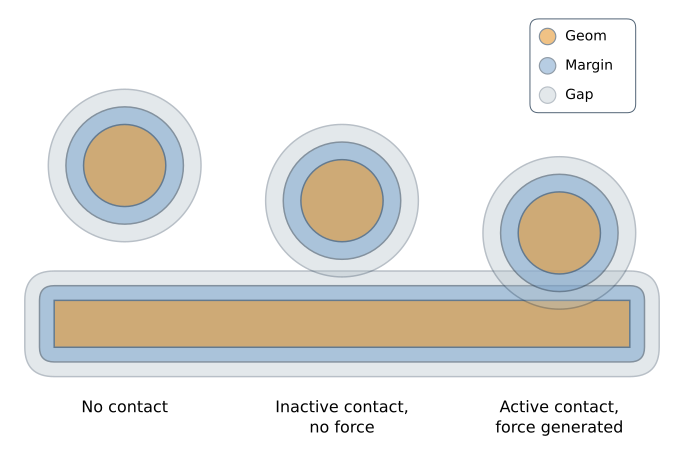
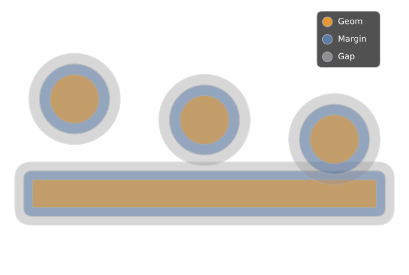
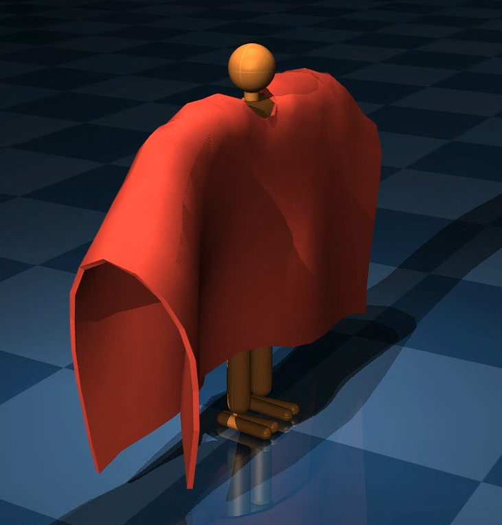
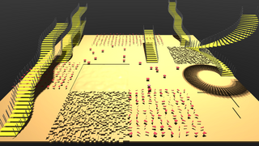
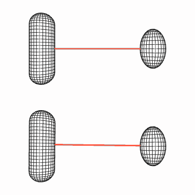
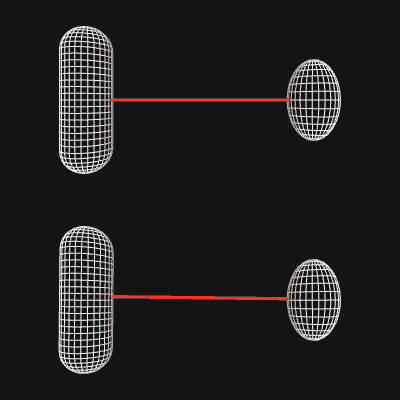
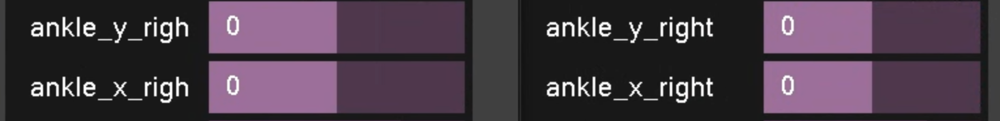
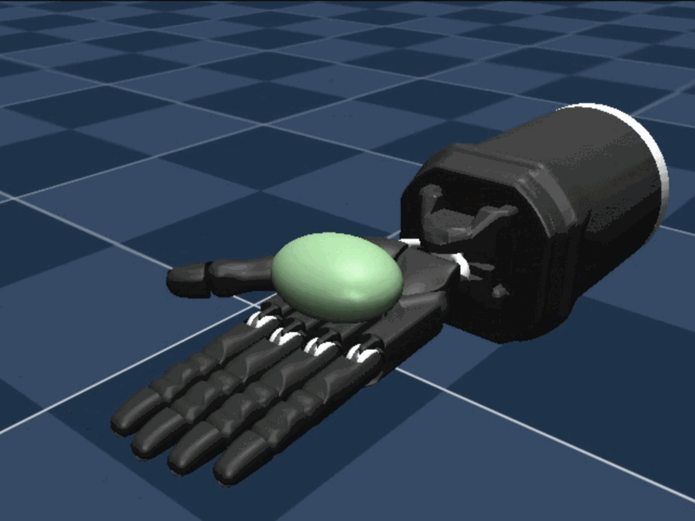
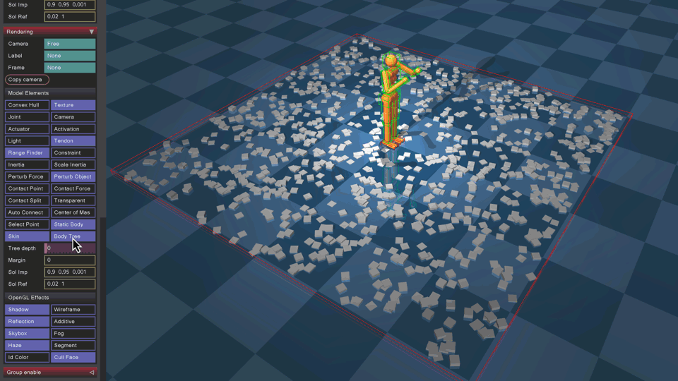
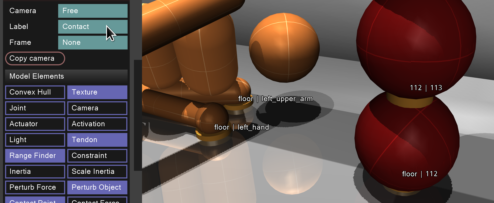

Changelog#
Version 3.9.0 (May 27, 2026)#
General#
Added
mjData.efc_Y, the whitened constraint Jacobian \(Y = J M^{-1/2}\), allocated in the arena when dual solvers (PGS or NoSlip) are used or when diagexact is enabled.Added the diagexact enable flag, which computes the exact diagonal of the constraint-space inertia matrix at the current configuration, replacing the default compile-time approximation. This improves solver quality for models with anisotropic inertias or complex kinematic coupling. See Exact diagonal for details.
The pseudo-random constraint visitation order in the PGS solver, introduced in the previous release, now uses a fixed seed. The previous implementation seeded with
mjData.time, which introduced subtle yet undesirable time dependence.Flexes are now allowed to sleep, with the exception of completely passive (constraint-free) flexes.
Added compiler timing diagnostics via the new mjtCTimer enum and the mjs_getTimer C API. After mj_compile, per-category timings (total, assets, mesh loading, convex hull, normals, inertia, BVH, octree, textures) are available via
mjs_getTimer(spec). The compile sample prints a detailed timing breakdown when run without an output file.Added mjtBool to represent boolean variables, replacing mjtByte across all boolean fields in mjModel, mjData, and public C API function signatures.
Breaking API changes
The semantics of the contact
marginandgapparameters have been redesigned for conceptual clarity and consistency with Newton. See the new margin and gap documentation section for details.Previously,
margincontrolled the detection threshold (contacts exist whendist < margin) andgapwas subtracted from it to produce the force threshold (forces generated whendist < margin - gap). This was unintuitive: users expectedmarginto mean geometric inflation andgapto mean a spatial gap.Under the new semantics,
marginis the geometric inflation of the geom surface andgapis an additional detection buffer beyond the inflated surface:Detection: contacts are created when
dist < margin + gap.Force generation: constraint forces are applied when
dist < margin.Inactive contacts: contacts with
margin < dist ≤ margin + gapare included inmjData.contactbut generate no force (efc_address = -1). This is useful for adhesion actuators and custom callbacks.
With the default values
margin = 0,gap = 0, the behavior is unchanged.

Migration: Models that use the default
gap="0"(the vast majority) require no changes. For models withgap > 0, apply the following transformation to preserve identical behavior:margin_new = margin_old - gap_old gap_new = gap_old
For example, a geom with the old attributes
margin="0.1" gap="0.1"should be changed tomargin="0" gap="0.1".Negative
marginvalues are now permitted (corresponding togap > marginunder the old semantics). The constraintmargin + gap >= 0should be maintained to ensure valid collision detection.The mjfCollision functions now populate the mjPreContact struct instead of the mjContact struct. The mjPreContact only contains the necessary fields needed for the narrowphase collision detection.
The header file
mjtnum.hwas renamed tomjtype.h <https://github.com/google-deepmind/mujoco/blob/main/include/mujoco/mjtype.h>and now includes all enum type definitions.The tactile sensor now reports raw depth instead of an estimated pressure.
MJX: Removed the deprecated
nconmaxargument frommjx.make_dataandmjx.put_datain favor ofnaconmax.Maybe-breaking: Added mjassert.h, a new header containing compile-time assertions that verify the sizes of MuJoCo’s public types for ABI stability. This is a first step towards replacing
intwith strongly-typed enums in the public API. If these assertions fail on your compiler or platform, please report the issue on GitHub.
{kind=link}
{kind=link}
Version 3.8.1 (May 11, 2026)#
General#
Added island support for the PGS solver.
The PGS solver now iterates over constraints in pseudo-random order, improving performance by ~20%.
Added support for elastic2d for trilinear and quadratic flex dofs.
Midpoint integration is now restricted to the
implicitfastintegrator and is disabled when fluid forces are active (nonzero density or viscosity). Midpoint integration treats external forces as zero-order-hold constants, which causes energy gain in the presence of contacts and in fluid media.Added mjs_getOriginSpec, returning the spec that originally defined an element, prior to attachment. This is in contrast to mjs_getSpec which returns the spec currently owning the element. If the element is not the result of an attach operation, the functions are identical.
Added mju_sym2dense, converting a lower-triangular, implicitly symmetric CSR matrix to a dense symmetric matrix. The inertia matrix
mjData.Mis an example of such a matrix.
Future breaking API changes
The introduction of mju_sym2dense is a step towards the removal of the legacy-format
mjData.qMin favor of the CSR-formatmjData.M. This removal will involve a future breaking change to mj_fullM (which currently accepts aqM-like matrix as an argument). To prevent a future breakage, replacemj_fullM(m, dst, d->qM)with
mju_sym2dense(dst, d->M, m->nv, m->M_rownnz, m->M_rowadr, m->M_colind).
Bug fixes#
Fixed default for multiccd in mjcPhysics.
Python#
Added
MjSpec.encodemethod, wrapping mj_encode.Added
mujoco.MjVfsPython binding to interact with the Virtual File System directly from Python. See Virtual File System for usage details.Warning
The previous way of passing assets via a dictionary mapping asset names to bytes is deprecated and will be removed in an upcoming release. You cannot specify both the
assetsdictionary and thevfsargument at the same time.MjVfsshould be used as a drop-in replacement.
Version 3.8.0 (April 24, 2026)#
General#
Added support for Python 3.14.
Added multi-cell support for trilinear and quadratic flexes. Note that the implicit integrator uses a dense solver for the flex degrees of freedom, which can be slow for multi-cell flexes.
Refactored
strainflex equality constraints to be instantiated per cell instead of per flex object, reducing the number of degrees of freedom per constraint row. The equality can be associated with a specific cell with the new attribute cellAdded new mj_maxContact function to get the maximum number of possible contacts returned by colliding two geoms.
Added
mj_containsBufferVFSandmj_containsFileVFSto check for existence of buffers and files in VFS.
Breaking API changes
Documentation#
Added documentation for mjpDecoder plugins.
Bug fixes#
Asset paths in attached child specs are now resolved relative to the model file directory of the child spec, rather than the parent spec. This prevents the origin of the parent spec to affect the resolution of asset paths in the child spec.
Version 3.7.0 (April 14, 2026)#
General#
Added the dcmotor actuator for modeling DC motors. Supports optional electrical dynamics (inductance), cogging torque, thermal resistance variation, and LuGre friction. See the technical note for more details.
Actuators with joint or tendon transmissions can now contribute damping and armature to their transmission target. These are applied during the passive force and inertia computations, respectively, and are scaled by gear2 (“reflected” damping/inertia).
Stiffness in joints and tendons and damping in joints and tendons now support nonlinear polynomial force profiles. New
mjModelarrays (jnt_stiffnesspoly,tendon_stiffnesspoly,dof_dampingpoly,tendon_dampingpoly) hold higher-order coefficients. The existing scalar arrays (jnt_stiffness,dof_damping, etc.) continue to hold the linear coefficient and are unchanged. The polynomial order is defined by the new constant mjNPOLY. A future breaking C-API change may unify the linear and higher-order coefficients into a single array.Added midpoint integration for standalone free bodies in
implicitandimplicitfastintegrators. This applies the implicit midpoint rule to the rotational dynamics of free bodies with no children, conserving kinetic energy to machine precision in the absence of external torques. The invdiscrete flag now also disables midpoint integration, providing an opt-out mechanism.Added the centripetal/Coriolis acceleration term \(\dot{J}v\) to the constraint solver bias for connect and weld equality constaints. This significantly improves the stability of constrained mechanisms like four-bar linkages. See Dual problem for details.
Introduced mjpEncoder, the counterpart to mjpDecoder for encoding of mjSpec and mjModel into mjResource.
Added mj_encode, mjp_registerEncoder, mjp_defaultEncoder, and mjp_findEncoder.
Breaking API changes
The
mjslayer fieldsstiffnessanddampingin mjsJoint and mjsTendon have been widened frommjtNumscalars tomjtNum[mjNPOLY+1]arrays. The first element is the linear coefficient (previously the scalar), and subsequent elements are the higher-order polynomial coefficients.Migration: Replace assignments like
joint.stiffness = valwithjoint.stiffness[0] = val..objand.stldecoders are now included as source when building MuJoCo with CMake. This fixes the behaviour from the previous release where it required downstream code to load these plugins explicitly.The
vertcollidefield in mjsFlex has been removed. It is no longer required since MuJoCo Warp supports native flex collisions.mjPLUGIN_LIB_INIT macro now requires a name argument to avoid initialization function name collisions. When building with MSVC, we now use the C runtime initialization section to initialize plugins instead of
DllMain. See plugin registration for more details.The mjtWarning enum value
mjWARN_VGEOMFULLis removed. Exhaustion of visual geoms is now handled internally by the mjvScene.URDF parsing no longer hardcodes strippath to “true”. The setting is now respected and the default is “false”. Setting this is attribute is now the responsibility of the user.
Migration: Set strippath to “true” in MJCF or programmatically using
spec = mujoco.MjSpec.from_file("path/to/model.urdf") spec.compiler.strippath = True
Bug fixes#
The compiler now correctly accounts for negative scaling when loading user specified mesh data.
Version 3.6.0 (March 10, 2026)#
General#
Breaking API changes
Added mjs_getCompiler C API function and a
compilerread-only property to all Python spec element types. This allows querying the compiler settings (e.g.,meshdir) from any element, with the correct originating spec’s compiler preserved after attachment.Added a new
strainequality constraint type for trilinear and quadratic dofs.Flexes now support collisions with SDF geoms.
Improved memory requirements for
ten_Jandten_J_colindby reducing the upper bound for the number of non-zerosnJten.Improved memory requirements for
actuator_momentandmoment_colindby reducing the upper bound for the number of non-zerosnJmom.
MJX#
Add batch rendering support for MJX-Warp. See the MJX-Warp batch rendering section for details.
Bug fixes#
Fixed a bug where mjs_attach silently dropped spatial tendons with wrapping geometries that had no
sidesiteattribute (issue #3119, reported by @tomstewart89).
Version 3.5.0 (February 12, 2026)#
Significant new features#
MuJoCo Warp is now officially released.
Added a new System Identification toolbox (Python), see README for details.
A Colab notebook demonstrating the toolbox is available here:
Contribution by @kevinzakka, @aftersomemath, @jonathanembleyriches, @qiayuanl, @spjardim and @gizemozd.
Actuators and sensors now support arbitrary delays via history buffers, and sensor values can be computed at intervals larger than the simulation timestep. Using a delay or interval introduces a new
mjData.historyvariable to the Physics state. See Delays for details.

Added new flexvert equality constraints that enable cloth simulations with coarser meshes. This adds a new attribute value
vertto flexcomp edge equality and the new equality type flexvert. Uses the method described in Chen, Kry and Vouga, 2019.Added implicit integration support for deformable objects (flex) in
implicitandimplicitfastintegrators. This method extracts the flex degrees of freedom and solves them as a dense block, enabling increased stability for stiff flex objects without reducing the timestep. It is compatible with thetrilinearandquadraticdof types.

Rangefinder sensors can now be attached to a camera using the rangefinder/camera attribute. In this case, the sensor respects the camera/resolution attribute and casts multiple rays, one for each pixel.
Rangefinders can now report various kinds of information besides ray distances, including surface normals and intersection points.
General#
Breaking API changes
Ray-cast functions now optionally compute the surface normal at the ray intersection. This is a breaking change due to the addition of the
mjtNum normal[3]argument. The modified functions are mj_ray, mj_multiRay, mju_rayGeom, mj_rayFlex, mj_rayHfield and mj_rayMesh.Migration: In C/C++, pass
NULLto thenormalargument. In Python, in all functions except mj_multiRay, it defaults toNone, so no action is required.mju_rayFlexhas been renamed to mj_rayFlex for consistency with other functions that takemjModel*andmjData*arguments.The
mjModel.cam_orthographicfield has been renamed tocam_projection, with the semantic of a new enum type mjtProjection. This will allow for more projection types in the future like fisheye cameras. Relatedly, thecamera/orthographicMJCF attribute for cameras has been renamed to camera/projection and now accepts the valuesorthographicandperspective.Migration: Replace
orthographic = "false/true"withprojection="perspective/orthographic", respectively.Removed
getdirfrom themjpResourceProviderstruct. All Resource Providers now use the same shared implementation.When combining the
marginorgapparameters of two geoms to obtain the parameters of a contact, the respective values are now summed rather than taking the maximum. This allows geom margins to be a proper “inflation” of the geom.
Camera frustum visualization is now triggered by setting resolution to values larger than 1. Relatedly, frustum visualization also works for orthographic cameras. See rangefinder for details.
Cameras now have an output attribute, parsed into the
mjModel.cam_outputbitfield. Unused by the renderer, it serves as a convenient location to store a camera’s supported output types.Added mj_mountVFS and mj_unmountVFS functions for mounting a custom VFS provider. Mounting allows providers to be used to open/read/close resources dynamically at arbitrary paths.
The optimization whereby sequential collision sensors with identical attributes shared computation has been removed. This results in a (likely minor) performance regression for models which exploited this optimization. To recover the performance, use the fromto and compute the other values manually. If
from = fromto[0:3]andto = fromto[3:6]thendistance = norm(to-from)andnormal = normalize(to-from).-
Parsing has been moved out of experimental into a mjpDecoder plugin. (documentation pending)
OpenUSD can now be built with the third_party_deps/openusd CMake utility project.
USD_DIRis no longer used by the MuJoCo CMake project, instead usepxr_DIRif you have a pre-built USD library.Users no longer have to set
PXR_PLUGINPATH_NAMEenvironment variable, MuJoCo should load USD plugins automatically.
Non-breaking ABI changes:
The type of the
sig(signature) argument of mj_stateSize and related functions has been changed fromunsigned inttoint. Before this change, invalid negative arguments passed to this function would result in a silent implicit cast; now, negativity will trigger an error.Added a depth rendering flag.
Allocation sizes in mjModel now use 64-bit rather than 32-bit integers to accommodate larger scenes.
MJX#
Added
actuator_length,cdofandcdof_doffields tomjx.Data.Add
graph_modeargument toput_modelto support multiple Warp graph capture modes.
Documentation#
General improvements to the Programming/Simulation chapter. Notably, the main discussion of state has been moved there, and the section on mjModel changes has been expanded.
The usability of the MJCF schema is improved with a collapsible dropdown menu with links to elements and attributes.
MuJoCo version numbering is now based on Semantic Versioning, see VERSIONING.md.
Bug fixes#
Fixed a bug in implicit integrator derivatives where actuator velocity derivatives were incorrectly computed when the force was clamped by forcerange.
Fixed a bug in implicit integrator derivatives where actuator velocity derivatives did not account for the actearly flag.
Multi-threaded mesh processing, enabled by the usethread compiler flag (on by default), was in fact disabled by the flag. Fixing this bug speeds up compilation of mesh-heavy models by (up to) the number of available cores.
The
vertidargument of mj_rayFlex and mju_raySkin was marked as nullable but was not; it is now nullable.Fixed gravcomp being ignored for bodies with no joints nested inside jointed parent bodies (issue #3066, reported by @Alex108306).
Version 3.4.0 (December 5, 2025)#
General#
Introduced a major new feature: sleeping islands. Preliminary release for early testing, see documentation for details.
Added “quadratic” option to flexcomp/dof. This type of fast deformable flex object is similar to the “trilinear” option, but it includes curved deformations.
Raise an error if there are name collisions also during parsing.
Increase Windows stack size to 16MB to enable models with deep nested body hierarchies.
Added a new pipeline component function mj_fwdKinematics that combines all kinematics-like sub-components. Relatedly, added a clarifying table at the top of the Simulation Pipeline chapter.
Added a new mj_extractState function that allows a subset of a state that was previously returned by mj_getState to be extracted without having to be written back into
mjDatafirst.Added a new mj_copyState function that copies state components from one
mjDatato another.Tendon paths can now be queried from Python via
MjsTendon.path, the returned object is iterable and indexing it will give theMjsWrapat the given index in the path.MjsWrapnow exposes:type -> mujoco.mjtWraptarget -> MjsSite|MjsJoint|MjsGeom|Nonesidesite -> MjsSite|Nonecoef -> realdivisor -> real
Non-breaking ABI changes:
mjtSize is now defined as
int64_trather thanuint64_tto avoid future type-promotion bugs.mj_sizeModel now returns an mjtSize rather than an
int.
MJX#
warp-langoptional dependency is updated to 1.10.0.pmapnow works with MuJoCo Warp from MJX.
Breaking ABI changes
mjx.Model.tex_datais now a numpy ndarray instead of a jax.Array, to avoid vmapping over this potentially large array. This may break certain use-cases with Madrona MJX, but we are no longer supporting this codepath. We will be migrating users to a Warp-based batch renderer.
Bug fixes#
Fixed a bug in the box-box distance computation. Reported by @nvtw.
Version 3.3.7 (October 13, 2025)#
General#
Breaking API changes
The mjSpec C API fields meshdir and texturedir have been moved to compiler.meshdir and compiler.texturedir respectively. For backwards compatibility, the old fields are still available in the Python API but will be removed in a future release.
Migration: Replace
meshdirandtexturedirwithcompiler.meshdirandcompiler.texturedir.Remove
_full_compatfrommjx.put_dataandmjx.put_model.nconmaxandnjmaxfields inmjx.make_datanow default toNoneinstead of -1.nconmaxwill be deprecated in favor ofnaconmaxin a future release.
Joint decorators and spatial tendons which have limits defined and whose current value (angle or length) exceeds the limit, are recolored by using the constraint impedance \(d\) to mix the existing color with visual/rgba/constraint. For spatial tendons, this visualization aid is active only if no material is set and rgba is default.
Added mju_getXMLDependencies for computing a list of unique asset dependencies from an MJCF file.
Added the code sample
dependencieswhich provides command line utility for printing the result of mju_getXMLDependencies.The minimum C++ standard required to compile MuJoCo is now C++20, this has been the case within Google since 2023 but the CMake update was forgotten.
Breaking ABI changes
The attribute
mjOption.apiratewas unused and has been removed.MJX
nconmaxandnjmaxfields inmjx.make_datanow default toNoneinstead of -1.
MJX#
Fix issue #2508,
qLDshapes mismatched mjModel duringget_data_into.Pull in MuJoCo Warp update to
io.py, and usenaconmaxinstead ofnconmaxto set the maximum number of contacts over all environments.
Bug fixes#
Fix issue #2881, fitaabb was adding an offset to the mesh and applying an incorrect frame transformation. Also, unify the meaning of fitting a geom to a mesh AABB: it now means to find the smallest geom such that its AABB contains the mesh AABB.
Version 3.3.6 (September 15, 2025)#
General#
Constraint island discovery and construction, previously an experimental feature, is now documented and promoted to default; disable it with option/flag/island. We expect islanding to be a strict improvement over the monolithic constraint solver, please let us know if you experience any issues.
Contact sensor subtree1/subtree2 specification is now available for any body, not just direct children of the world.
Breaking API changes
The update of
mjData.qacc_warmstartwas moved from the end of the solver call (mj_fwdConstraint) to the end of mj_step, and is now updated with all other state variables. This change makes mj_forward fully idempotent.Before this change, calling mj_forward repeatedly would make the constraint solver converge, since each subsequent call would start from the previously updated
qacc_warmstartvalue. Indeed, this is precisely what happened in the viewer, which calls mj_forward repeatedly in PAUSE mode.Migration: If your code depended on this behavior, you can recover it by updating manually after each mj_forward:
qacc_warmstart ← qacc. The behavior is available in simulate by clicking the “Pause update” toggle (off by default).Furthermore, this change has a numerical impact on the output of the RK4 integrator. Before this change, due to the
qacc_warmstartupdate occurring after each of the four Runge-Kutta substeps, the solver convergence of RK4 was faster, at the cost of unprincipled integration. This change makes the RK4 integration principled and well-defined. Since this change to RK4 is effectively a bug fix, migration to the previous behavior is not provided.The
mjDSBL_PASSIVEflag for disabling passive forces was removed and replaced by mjDSBL_SPRING and mjDSBL_DAMPER with corresponding mjcf attributes. Each flag disables only joint and tendon springs or dampers, respectively. When both flags are set, all passive forces are disabled, including gravity compensation, fluid forces, forces computed by the mjcb_passive callback, and forces computed by plugins when passed the mjPLUGIN_PASSIVE capability flag.Migration: Set both flags to recover the behavior of the previous flag.
Breaking ABI changes
Removed
mjMOUSE_SELECTflag for mjtMouse as it is no longer in use.The promotion of islanding to default involved removing the enable flag
mjENBL_ISLANDand converting it to a disable flag mjDSBL_ISLAND.
Added support for shells with a curved reference configuration. See this example.
Added experimental option for passive contacts involving flexes.
Added support for assigning a default material to a mesh asset using the mesh/material attribute.
MJX#
Promote
ten_lengthto the public MJX API. Add Warp support formjx.tendon.
Breaking API changes
ten_lengthwas moved frommjx.Data._impl.ten_lengthto a public fieldmjx.Data.ten_length.
Bug fixes#
Fixed a latent bug where MjData objects were not serialized correctly by the Python bindings when islanding was enabled.
Version 3.3.5 (August 8, 2025)#
General#
Added the insidesite sensor, for checking if an object is inside the volume of a site. It is useful for triggering events in surrounding environment logic.
Added the contact sensor, for reporting contact information according to user-defined criteria. The purpose of the contact sensor is to report contact-related information in a fixed-size array. This is useful as input to learning-based agents and in environment logic.
Added the tactile sensor, for measuring the penetration depth between two objects at given points and the sliding velocities in the tangent frame. The sensor reports tactile data only when colliding with SDFs.
Removed the SdfLib plugin and the dependency on SdfLib. SDFs are now supported natively in mjModel.
Removed
oct_depthfrom mjvOption (unused).Added the functionality to create a builtin meshes, see mesh/builtin.
Inertia computation in MuJoCo C is now performed by a new pipeline function mj_makeM, which combines the Composite Rigid Body algorithm in mj_crb and additional terms related to tendon armature. Code that uses mj_crb to compute the inertia should now use mj_makeM instead.
Breaking API changes
Removed the
mjVIS_FLEXBVHenum value, its functionality is now provided by mjVIS_MESHBVH.
Bug fixes#
Fixed a bug that caused object lists in the child to have missing elements after attaching an mjSpec. This was caused by adding to the lists only the objects that belong to the tree of the requested body, but this causes to skip objects that were attached, since they belong to the tree of the parent.
Fixed a bug where the convex hull of a collision mesh was not being computed if the mesh could only collide via a contact pair.
Python#
On Linux, built distribution packages (wheels) now target the
manylinux_2_28platform tag. Previously MuJoCo wheels targetedmanylinux2014based on CentOS 7, which reached end-of-life in June 2024.
MJX#
Add Warp as a backend implementation for MJX. The implementation can be specified via
mjx.put_model(m, impl='warp')andmjx.make_data(m, impl='warp'). The warp implementation requires a CUDA device andwarp-langto be installed (pip install mujoco-mjx[warp]). This feature is available in “beta” and some bugs are expected.
Version 3.3.4 (July 8, 2025)#
Breaking API changes
The functions
mjs_detachBodyandmjs_detachDefaulthave been replaced by mjs_delete.The Python functions
element.deletehave been replaced byspec.delete(element).In the mjSpec C API, directly setting an element’s name using mjs_setString has been replaced with a new function mjs_setName which allows checking for naming collisions at set-time rather than compile-time, for earlier catching of errors. Relatedly, the
nameattribute has been removed from all mjs elements. Known issue: the error is not raised during parsing.For MJX, the
mjx.Optiondataclass now has private and public fields similar tomjx.Modelandmjx.Data. Some fields are no longer publicly available due to differences in the underlying implementations of this data structure.
General#
Added support for setting the initial camera in the viewer using visual/global/cameraid.
Added support to only sync the state in the Python passive viewer’s
Syncmethod, this is useful to improve performance. The default behavior is unchanged and copies the entire model and data.
Bug fixes#
Inverse dynamics were not being computed correctly when tendon armature was present, now fixed.
Fix bug in
mjx.put_datawhereactuator_momentwas not being copied correctly for the C implementation.
Documentation#
Added missing item documentation and clarified the nature of breaking changes in the 3.3.3 changelog. See items 3 and 4 below.
Version 3.3.3 (June 10, 2025)#
General#
Refactored island implementation so that island data is memory-contiguous. This speeds up island processing in the solver and clears the way for the addition of the Newton and PGS solvers (currently only CG is supported).
Removed the shell plugin. This is now supported by flexcomp and is active depending on the elastic2d attribute (off by default).
Breaking API changes
Replaced the directional (boolean) field for lights with a type field (of type mjtLightType) to allow for additional lighting types.
Migration: Replace light/directional=”false/true” with light/type=”spot/directional”, respectively.
Added mjtColorSpace enum and associated colorspace attribute that allows to specify the color space of textures (either linear or sRGB). Since this property is now read correctly from PNG files, textures files which use sRGB will now be rendered differently.
Migration: Set colorspace to “linear” for all textures that should look like they did before this change.
Added new sub-component mj_makeM which combines the mj_crb call with additional logic to support the introduction in 3.3.1 of tendon armature. In addition to the traditional
mjData.qM, mj_makeM also computesmjData.M, a CSR representation of the same matrix.Added a new function mj_copyBack to copy real-valued arrays in an mjModel to a compatible mjSpec.
Removed the limitation of fusestatic to models which contain no references. The fusestatic flag will now fuse all bodies which are not referenced and ignore bodies which are referenced.
Simulate#
The struct
mjv_sceneStatehas been removed. This struct was used for partial synchronization ofmjModelandmjDatawhen the Python viewer is used in passive mode. This functionality is now provided by mjv_copyModel and mjv_copyData, which don’t copy arrays which are not required for visualization.
{kind=link}

Python bindings#
Added examples of procedural terrain generation to the Model Editing tutorial:
MJX#
Added tendon armature.
Version 3.3.2 (April 28, 2025)#
MJX#
Added inverse dynamics.
Added tendon actuator force sensor.
Fix issue #2606 such that
make_datacopies overmocap_posandmocap_quatfrombody_posandbody_quat.
Version 3.3.1 (Apr 9, 2025)#
Breaking API changes
The default value of the flag for toggling internal flex contacts was changed from “true” to “false”. This feature has proven to be counterintuitive for users.
All of the attach functions (
mjs_attachBody,mjs_attachFrame,mjs_attachToSite,mjs_attachFrameToSite) have been removed and replaced by a single function mjs_attach.
General#
Added tendon armature: inertia associated with changes in tendon length.
Added the compiler/saveinertial flag, writing explicit inertial clauses for all bodies when saving to XML.
Added orientation attribute to composite. Moreover, allow the composite to be the direct child of a frame.
Added tendon actuator force limits and tendon actuator force sensor.
MJX#
Added tendon actuator force limits.
Bug fixes#
mj_jacDot was missing a term that accounts for the motion of the point with respect to which the Jacobian is computed, now fixed.
Fixed a bug that caused the parent frame of elements in the child worldbody to be incorrectly set when attaching an mjSpec to a frame or a site.
Fixed a bug that caused shadow rendering to flicker on platforms (e.g., MacOS) that do not support ARB_clip_control. Fixed in collaboration with @aftersomemath.
Python bindings#
Version 3.3.0 (Feb 26, 2025)#
Feature promotion#
Introduced a new kind of fast deformable body, activated by setting flexcomp/dof to “trilinear”. This type of deformable flex object has the same collision geometry as a regular flex, but has far fewer degrees of freedom. Instead of 3 dofs per vertex, only the corners of the bounding box are free to move, with the positions of the interior vertices computed with trilinear interpolation of the 8 corners, for a total of 24 dofs for the entire flex object (or less, if some of the corners are pinned). This limits the types of deformation achievable by the flex, but allows for much faster simulation. For example, see the video on the right comparing full and trilinear flexes for modeling deformable gripper pads.
{kind=link}

{kind=link}

The native convex collision detection pipeline introduced in 3.2.3 and enabled by the nativeccd flag, is now the default. See the section on Convex Collision Detection for more details.
Migration: If the new pipeline breaks your workflow, set nativeccd to “disable”.
General#
Add support for custom plots in the MuJoCo viewer by exposing a
viewportproperty, aset_figuresmethod, and aclear_figuresmethod.Separate collision and deformation meshes for flex. This enables a fixed cost for the soft body computations, while preserving the fidelity of high-resolution collisions.
Improved shadow rendering in the native renderer.
Moved
introspecttopython/introspect.
Breaking API changes
As mentioned above, the native convex collision detection pipeline is now the default, which may break some workflows. In this case, set nativeccd to “disable” to restore the old behavior.
Added mjs_setDeepCopy API function. When the deep copy flag is 0, attaching a model will not copy it to the parent, so the original references to the child can be used to modify the parent after attachment. The default behavior is to perform such a shallow copy. The old behavior of creating a deep copy of the child model while attaching can be restored by setting the deep copy flag to 1.
Changes to inertia inference from meshes:
Previously, in order to specify that the mass lies on the surface, geom/shellinertia could be used for any geom type. Now this attribute is ignored if the geom is a mesh; instead, inertia inference for meshes is specified in the asset, using the asset/mesh/inertia attribute.
Previously, if the volumetric inertia computation failed (for example due to a very flat mesh), the compiler would silently fall back to surface inertia computation. Now, the compiler will throw an informative error.
Removed the composite type
grid. Users should instead use flexcomp.Removed the
particlecomposite type. It is recommended to use the more generic replicate instead, see for example this model.
MJX#
Added support for spatial tendons with internal sphere and cylinder wrapping.
Fix a bug with box-box collisions issue #2356.
Python bindings#
Added a pedagogical colab notebook for
mujoco.rollout, a Python module for multithreaded simulation rollouts. It is available here.
Contribution by @aftersomemath.
Version 3.2.7 (Jan 14, 2025)#
Python bindings#
rollout now features native multi-threading. If a sequence of
MjDatainstances of lengthnthreadis passed in,rolloutwill automatically create a thread pool and parallelize the computation. The thread pool can be reused across calls, but then the function cannot be called simultaneously from multiple threads. To run multiple threaded rollouts simultaneously, use the new classRolloutwhich encapsulates the thread pool. Contribution by @aftersomemath.Fix global namespace pollution when using
mjpython(issue #2265).
General#
Breaking API changes (minor)
The field
mjData.qLDiagSqrtInvhas been removed. This field is only required for the dual solvers. It is now computed as-needed rather than unconditionally. Relatedly, added the corresponding argument to mj_solveM2.
Reduced the memory footprint of the PGS solver’s A matrix. This was the last remaining dense-memory allocation in MuJoCo, allowing for a significant reduction of the dynamic memory allocation heuristic.
Bug fixes#
Fixed a bug in the box-sphere collider, depth was incorrect for deep penetrations (issue #2206).
Fixed a bug in mj_mulM2 and added a test.
Version 3.2.6 (Dec 2, 2024)#
General#
MJX#
Added muscle actuators.
Python bindings#
Provide prebuilt wheels for Python 3.13.
Added
bindmethod and removed id attribute from mjSpec objects. Using ids is error prone in scenarios of repeated attachment and detachment. Python users are encouraged to use names for unique identification of model elements.rollout can now accept sequences of MjModel of length
nroll. Also removed thenrollargument because its value can always be inferred.
Bug fixes#
Fixed issue #2212, type error in
mjx.get_data.Fixed bug introduced in 3.2.0 in handling of texrepeat attribute, was mistakenly cast from
floattoint, (fixed issue #2223).
Version 3.2.5 (Nov 4, 2024)#
Feature promotion#
The Model Editing framework afforded by mjSpec, introduced in 3.2.0 as an in-development feature, is now stable and recommended for general use.
The native convex collision detection pipeline introduced in 3.2.3 and enabled by the nativeccd flag, is not yet the default but is already recommended for general use. Please try it when encountering collision-related problems and report any issues you encounter.
General#
The global compiler flag
exactmeshinertiahas been removed and replaced with the mesh-specific inertia attribute.The not-useful
convexhullcompiler option (to disable computation of mesh convex hulls) has been removed.Removed the deprecated
mju_rotVecMat,mju_rotVecMatTandmjv_makeConnectorfunctions.Sorting now uses a faster, native sort function (fixes issue #1638).
The PBR texture layers introduced in 3.2.1 were refactored from separate sub-elements to a single layer sub-element.
The composite types box, cylinder, and sphere have been removed. Users should instead use the equivalent types available in flexcomp.
MJX#
Added
apply_ft,jac, andxfrc_accumulateas public functions.Added
TOUCHsensor.Added support for
eq_active. Fixes issue #2173.Added ray intersection with ellipsoid.
Bug fixes#
Fixed several bugs related to connect and weld constraints with site semantics (fixes issue #2179, reported by @yinfanyi). The introduction of site specification to connects and welds in 3.2.3 conditionally changed the semantics of
mjData.eq_obj1idandmjData.eq_obj2id, but these changes were not properly propagated in several places leading to incorrect computations of constraint inertia, readings of affected force/torque sensors and runtime enabling/disabling of such constraints.Fixed a bug in slider-crank transmission. The bug was introduced in 3.0.0.
Fixed a bug in flex texture coordinates that prevented the correct allocation of textures in mjModel.
Documentation#
Function headers in the API reference now link to their source definitions in GitHub.
Version 3.2.4 (Oct 15, 2024)#
General#
The Newton solver no longer requires
nv*nvmemory allocation, allowing for much larger models. See e.g., 100_humanoids.xml. Two quadratic-memory allocations still remain to be fully sparsified:mjData.actuator_momentand the matrices used by the PGS solver.Removed the solid and membrane plugins and moved the associated computations into the engine. See 3D example model and 2D example model for examples of flex objects that previously required these plugins.
Replaced the function
mjs_setActivePluginswith mjs_activatePlugin.
MJX#
Added
mocap_posandmocap_quatin kinematics.Added support for spatial tendons with pulleys and external sphere and cylinder wrapping.
Added sphere-cylinder and sphere-ellipsoid collision functions (issue #2126).
Fixed a bug with frictionloss constraints.
Added
TENDONPOSandTENDONVELsensors.Fixed a bug with the computation of tangential contact forces in
_decode_pyramid.Added
JOINTINPARENTactuator transmission type.
Python bindings#
Removed support for Python 3.8, now that it’s deprecated upstream.
Bug fixes#
Fixed a bug where
actuator_forcewas not set in MJX (issue #2068).Fixed bug where MJX data tendon fields were incorrect after calling
mjx.put_data.The compiler now returns an error if height fields are used with collision sensors as they are not yet supported.
Version 3.2.3 (Sep 16, 2024)#
General#
Breaking API changes
The runtime options
mpr_toleranceandmpr_iterationswere renamed to ccd_tolerance and ccd_iterations, both in XML and in the mjOption struct. This is because the new convex collision detection pipeline (see below) does not use the MPR algorithm. The semantics of these options remain identical.The functions
mjs_findMeshandmjs_findKeyframewere replaced bymjs_findElement, which allows to look for any object type.The experimental use of 2D/3D elasticity plugins with composite has been removed. Users should instead use flexcomp, which provides the correct collision behavior.
Added the nativeccd flag. When this flag is enabled, general convex collision detection is handled with a new native code path, rather than libccd. This feature is in early stages of testing, but users who’ve experienced issues related to collision detection are welcome to experiment with it and report any issues.
Added a new way of defining connect and weld equality constraints, using two sites. The new semantic is useful when the assumption that the constraint is satisfied in the base configuration does not hold. In this case the sites will “snap together” at the beginning of the simulation. Additionally, changing the site positions (
mjModel.site_pos) and orientations (mjModel.site_quat) at runtime will correctly modify the constraint definition. This example model using the new semantic is shown in the video on the right.Introduced free joint alignment, an optimization that applies to bodies with a free joint and no child bodies (simple free-floating bodies): automatically aligning the body frame with the inertial frame. This feature can be toggled individually using the freejoint/align attribute or globally using the compiler alignfree attribute. The alignment diagonalizes the related 6x6 inertia sub-matrix, leading to both faster and more stable simulation of free bodies.
While this optimization is a strict improvement, it changes the semantics of the joint’s degrees-of-freedom. Therefore,
qposandqvelvalues saved in older versions (for example, in keyframes) will become invalid. The global compiler attribute currently defaults to “false” due to this potential breakage, but could be changed to “true” in a future release. Aligned free joints are recommended for all new models.Added an mjSpec option for creating a texture directly from a buffer.
shell (surface) inertia is now supported by all geom types.
When attaching sub-models, keyframes will now be correctly merged into the parent model, but only on the first attachment.
Added the mjtSameFrame enum which contains the possible frame alignments of bodies and their children. These alignments are used for computation shortcuts in mj_kinematics.
Added mj_jacDot for computing time-derivatives of kinematic Jacobians. Fixes issue #411.
MJX#
Added
efc_postomjx.Data(issue #1388).Added position-dependent sensors:
MAGNETOMETER,CAMPROJECTION,RANGEFINDER,JOINTPOS,ACTUATORPOS,BALLQUAT,FRAMEPOS,FRAMEXAXIS,FRAMEYAXIS,FRAMEZAXIS,FRAMEQUAT,SUBTREECOM,CLOCK.Added velocity-dependent sensors:
VELOCIMETER,GYRO,JOINTVEL,ACTUATORVEL,BALLANGVEL,FRAMELINVEL,FRAMEANGVEL,SUBTREELINVEL,SUBTREEANGMOM.Added acceleration/force-dependent sensors:
ACCELEROMETER,FORCE,TORQUE,ACTUATORFRC,JOINTACTFRC,FRAMELINACC,FRAMEANGACC.Changed default policy to avoid placing unused (MuJoCo-only) arrays on device.
Added
deviceparameter tomjx.make_datato bring it to parity withmjx.put_modelandmjx.put_data.Added support for implicitfast integration for all cases except fluid drag.
Fixed a bug where
qLDiagInvhad the wrong size for sparse mass matrices.Added support for joint and tendon frictionloss.
Added support for connect equality constraints using two sites.
Added support for spatial tendons with site wrapping.
Bug fixes#
Fixed a performance regression introduced in 3.1.7 in mesh Bounding Volume Hierarchies (issue #1875, contribution by @michael-ahn).
Fixed a bug wherein, for models that have both muscles and stateless actuators and used one of the implicit integrators, wrong derivatives would be computed.
Fixed a bug in tendon wrapping around spheres. Before this fix, tendons that wrapped around spheres with an externally-placed sidesite could jump inside the sphere instead of wrapping around it.
Fixed a bug that caused meshdir and texturedir to be overwritten during model attachment, preventing model attachment for models with assets in different directories.
Python bindings#
Added support for engine plugins in mjSpec (issue #1903).
Better error reporting for issues with the assets dictionary, when loading models.
Version 3.2.2 (Aug 8, 2024)#
General#
Increase texture and material limit back to 1000. 3.2.0 inadvertently reduced this limit to 100, breaking some existing models (issue #1877).
Version 3.2.1 (Aug 5, 2024)#
General#
Renamed
mjModel.tex_rgbtomjModel.tex_data.Added a new autoreset flag to disable automatic reset when NaNs or infinities are detected.
Added sub-elements to the MJCF material element, to allow specification of multiple textures for rendering (e.g.,
occlusion, roughness, metallic). Note that the MuJoCo renderer doesn’t support these new features, and they are made available for use with external renderers.Sorting (
mjQUICKSORT) now callsstd::sortwhen building with C++ (issue #1638).
MJX#
Added more fields to
mjx.Modelandmjx.Datafor further compatibility with the corresponding MuJoCo structs.Added support for fixed tendons.
Added support for tendon length limits (
mjCNSTR_LIMIT_TENDONin mjtConstraint).Added support for tendon equality constraints (
mjEQ_TENDONin mjtEq).Added support for tendon actuator transmission (
mjTRN_TENDONin mjtTrn).
Python bindings#
Added support for asset dictionary argument in
mujoco.spec.from_file,mujoco.spec.from_stringandmujoco.spec.compile.
Bug fixes#
Fixed a bug where implicit integrators did not take into account disabled actuators (issue #1838).
Version 3.2.0 (Jul 15, 2024)#
New features#
Introduced a major new feature: procedural model creation and editing, using a new top-level data-structure mjSpec. See the Model Editing chapter for details. Note that as of this release this feature is still in testing and subject to future breaking changes. Fixes issue #364.
General#
Breaking API changes
Removed deprecated
mj_makeEmptyFileVFSandmj_findFileVFSfunctions. The constantsmjMAXVFSandmjMAXVFSNAMEare also removed as they are no longer needed.Migration: Use mj_addBufferVFS to copy a buffer into a VFS file directly.
Calls to mj_defaultVFS may allocate memory inside VFS, and the corresponding mj_deleteVFS must be called to deallocate any internal allocated memory.
Deprecated
mju_rotVecMatandmju_rotVecMatTin favor of mju_mulMatVec3 and mju_mulMatTVec3. These function names and argument order are more consistent with the rest of the API. The older functions have been removed from the Python bindings and will be removed from the C API in the next release.Removed the
actuator_actdimcallback from actuator plugins. They now have theactdimattribute, which must be used with actuators that write state to theactarray. This fixed a crash which happened when keyframes were used in a model with stateful actuator plugins. The PID plugin will give an error when the wrong value of actdim is provided.
Added attach meta-element to MJCF, which allows attaching a subtree from a different model to a body in the current model.
The VFS implementation has been rewritten in C++ and is now considerably more efficient in speed and memory footprint.
Added support for orthographic cameras. This is available for both fixed cameras and the free camera, using the
camera/orthographicand global/orthographic attributes, respectively.Added maxhullvert, the maximum number of vertices in a mesh’s convex hull.
Added mj_setKeyframe for saving the current state into a model keyframe.
Added support for
balljoints in the URDF parser (“spherical” in URDF).Replaced
mjUSEDOUBLEwhich was previously hard-coded in mjtnum.h with the build-time flagmjUSESINGLE. If this symbol is not defined, MuJoCo will use double-precision floating point, as usual. IfmjUSESINGLEis defined, MuJoCo will use single-precision floating point. See mjtNum.Relatedly, fixed various type errors that prevented building with single-precision.
Quaternions in
mjData.qposandmjData.mocap_quatare no longer normalized in-place by mj_kinematics. Instead they are normalized when they are used. After the first step, quaternions inmjData.qposwill be normalized.Mesh loading in the compiler, which is usually the slowest part of the loading process, is now multi-threaded.
MJX#
Added support for elliptic friction cones.
Fixed a bug that resulted in less-optimal linesearch solutions for some difficult constraint settings.
Fixed a bug in the Newton solver that sometimes resulted in less-optimal gradients.
Simulate#
Added improved tutorial video.
Improved the Brownian noise generator.
Now displaying model load times if they are longer than 0.25 seconds.
Python bindings#
Fixed a memory leak when using
copy.deepcopy()on amujoco.MjDatainstance (issue #1572).
Bug fixes#
Fix an issue where
mj_copyData(orcopy.copy()in the Python bindings) was not copying contact information correctly (issue #1710).Fix an issue with saving to XML that caused frames to be written multiple times (issue #1802).
Version 3.1.6 (Jun 3, 2024)#
General#
Added mj_geomDistance for computing the shortest signed distance between two geoms and optionally a segment connecting them. Relatedly, added the 3 sensors: distance, normal, fromto. See the function and sensor documentation for details. Fixes issue #51.
Improvements to position actuators:
Added timeconst attribute to the position actuator. When set to a positive value, the actuator is made stateful with filterexact dynamics.
Added dampratio to both position and intvelocity actuators. An alternative to the kv attribute, it provides a convenient way to set actuator damping using natural units. See attribute documentation for details.
MJX#
Add height-field collision support. Fixes issue #1491.
Add a pre-compiled field
mesh_convextomjx.Modelso that mesh properties can be vmapped over. Fixes issue #1655.Fix a bug in convex mesh collisions, where erroneous edge contacts were being created even though face separating axes were found. Fixes issue #1695.
Bug fixes#
Fixed a bug the could cause collisions to be missed when fusestatic is enabled, as is often the case for URDF imports. Fixes issue #1069, issue #1577.
Fixed a bug that was causing the visualization of SDF iterations to write outside the size of the vector storing them. Fixes issue #1539.
Version 3.1.5 (May 7, 2024)#
General#
Added the replicate to MJCF, a meta-element which permits to repeat a subtree with incremental translational and rotational offsets.
Enabled an internal cache in the MuJoCo compiler resulting in recompilation speedup. Currently, processed textures, hfields, and OBJ meshes are cached. Support for Unity environments is not yet available.
Added
mjModel.mesh_scale: the scaling applied to asset vertices, as specified in the scale attribute.Added visual properties which are ignored by the native renderer, but can be used by external renderers:
light/bulbradius attribute and corresponding
mjModel.light_bulbradiusfield.material/metallic attribute and corresponding
mjModel.material_metallicfield.material/roughness attribute and corresponding
mjModel.material_roughnessfield.
The type of the
sizeargument of mj_stackAllocNum and mj_stackAllocInt was changed frominttosize_t.Added support for gmsh format version 2.2 surface meshes in flexcomp.
MJX#
Breaking API changes
Removed deprecated
mjx.device_get_intoandmjx.device_putfunctions as they lack critical new functionality.Migration: Use
mjx.get_data_intoinstead ofmjx.device_get_into, andmjx.put_datainstead ofmjx.device_put.
Added cylinder plane collisions.
Added
efc_typetomjx.Dataanddim,efc_addresstomjx.Contact.Added
geomtomjx.Contactand markedgeom1,geom2deprecated.Added
ne,nf,nl,nefc, andncontomjx.Datato matchmujoco.MjData.Given the above added fields, removed
mjx.get_params,mjx.ncon, andmjx.count_constraints.Changed the way meshes are organized on device to speed up collision detection when a mesh is replicated for many geoms.
Fixed a bug where capsules might be ignored in broadphase colliision checking.
Added cylinder collisions using SDFs.
Added support for all condim: 1, 3, 4, 6.
Add support functions for
id2nameandname2id, MJX versions of mj_id2name and mj_name2id.Added support for gravcomp and actuatorgravcomp.
Fixed a bug in
mjx.rayfor sometimes allowed negative distances for ray-mesh tests.Added a new differentiable physics tutorial that demonstrates training locomotion policies with analytical gradients automatically derived from the MJX physics step. Contribution by @Andrew-Luo1.
Bug fixes#
Defaults of lights were not being saved, now fixed.
Prevent overwriting of frame names by body names when saving an XML. Bug introduced in 3.1.4.
Fixed bug in Python binding of mj_saveModel:
bufferargument was documented as optional but was actually not optional.Fixed bug that prevented memory allocations larger than 2.15 GB. Fixes issue #1606.
Version 3.1.4 (April 10th, 2024)#
General#
Breaking API changes
Removed the ability to natively add noise to sensors. Note that the
mjModel.sensor_noisefield and corresponding attribute are kept and now function as a convenient location for the user to save standard-deviation information for their own use. This feature was removed because:There was no mechanism to seed the random noise generator.
It was not thread-safe, even if seeding would have been provided, sampling on multiple threads would lead to non-reproducible results.
This feature was seen as overreach by the engine. Adding noise should be the user’s responsibility.
We are not aware of anyone who was actually using the feature.
Migration: Add noise to sensor values yourself.
Added the actuatorgravcomp joint attribute. When enabled, gravity compensation forces on the joint are treated as applied by actuators. See attribute documentation for more details. The example model refsite.xml, which demonstrates Cartesian actuation of an arm, has been updated to use this attribute.
Added support for gmsh format 2.2 , tetrahedral mesh, as generated by e.g. fTetwild.
Added mju_euler2Quat for converting an Euler-angle sequence to quaternion.
MJX#
Improved performance of SAT for convex collisions.
Fixed bug for sphere/capsule-convex deep penetration.
Fixed bug where
mjx.Dataproduced bymjx.put_datahad different treedef thanmjx.make_data.Throw an error for margin/gap for convex mesh collisions, since they are not supported.
Added ellipsoid plane collisions.
Added support for userdata.
Added ellipsoid-ellipsoid and ellipsoid-capsule collisions using signed distance functions (SDFs).
Simulate#
Fixed bug in order of enable flag strings. Before this change, using the simulate UI to toggle the invdiscrete or the (now removed)
sensornoiseflags would actually toggle the other flag.
Python bindings#
Added the
mujoco.minimizePython module for nonlinear least-squares, designed for System Identification (sysID). The sysID tutorial is work in progress, but a pedagogical colab notebook with examples, including Inverse Kinematics, is available here:
The video on the right shows example clips from the tutorial.
Version 3.1.3 (March 5th, 2024)#
General#
Added the inheritrange attribute to position and intvelocity actuators, allowing convenient setting of the actuator’s ctrlrange or actrange (respectively), according to the range of the transmission target (joint or tendon). See position/inheritrange for details.
Deprecated
mj_makeEmptyFileVFSin favor of mj_addBufferVFS. mjVFS now computes checksums of its internal file buffers. mj_addBufferVFS allocates an empty buffer with a given name in an mjVFS and copies the data buffer into it, combining and replacing the deprecated two-step process of callingmj_makeEmptyFileVFSfollowed by a direct copy into the given mjVFS internal file buffer.Added mj_angmomMat which computes the
3 x nvangular momentum matrix \(H(q)\), providing the linear mapping from generalized velocities to subtree angular momentum \(h = H \dot q\). Contribution by @v-r-a.
MJX#
Improved performance of getting and putting device data.
Use
tobytes()for numpy array serialization, which is orders of magnitude faster than converting to tuples.Avoid reallocating host
mjDataarrays when array shapes are unchanged.Speed up calculation of
mjx.nconfor models with many geoms.Avoid calling
mjx.nconinmjx.get_data_intowhennccan be derived frommjx.Data.
Fixed a bug in
mjx-viewerthat prevented it from running. Updatedmjx-viewerto use newermjx.get_data_intofunction call.Fixed a bug in
mjx.eulerthat applied incorrect damping when using dense mass matrices.Fixed a bug in
mjx.solvethat was causing slow convergence when usingmjSOL_NEWTONin mjtSolver.Added support for mjOption.impratio to
mjx.Model.Added support for cameras in
mjx.Modelandmjx.Data. Fixes issue #1422.Added an implementation of broadphase using
top_kand bounding spheres.
Python bindings#
Fixed incorrect data types in the bindings for the
geom,vert,elem, andflexarray members of themjContactstruct, and all array members of themjrContextstruct.
Version 3.1.2 (February 05, 2024)#
General#
Improved the discardvisual compiler flag, which now discards all visual-only assets. See discardvisual for details.
Removed the timer for midphase colllision detection, it is now folded in with the narrowphase timer. This is because timing the two phases separately required fine-grained timers inside the collision functions; these functions are so small and fast that the timer itself was incurring a measurable cost.
Added the flag bvactive to
visual/global, allowing users to turn off visualisation of active bounding volumes (the red/green boxes in this this changelog item). For models with very high-resolution meshes, the computation required for this visualization can slow down simulation speed. Fixes issue #1279.Added color of bounding volumes and active bounding volumes to visual/rgba.
Height-field elevation data can now be specified directly in XML with the elevation attribute (and not only with PNG files). See example model.
MJX#
Added dyntype
filterexact.Added site transmission.
Updated MJX colab tutorial with more stable quadruped environment.
Added
mjx.raywhich mirrors mj_ray for planes, spheres, capsules, boxes, and meshes.Added
mjx.is_sparsewhich mirrors mj_isSparse andmjx.full_mwhich mirrors mj_fullM.Added support for specifying sparse or dense mass matrices via jacobian: [dense, sparse, auto], “auto”.
Raise a not implemented error when nonzero frictionloss is present. Fixes issue #1344.
Python bindings#
Improved the implementation of the rollout module. Note the changes below are breaking, dependent code will require modification.
Uses mjSTATE_FULLPHYSICS as state spec, enabling divergence detection by inspecting time.
Allows user-defined control spec for any combination of user input fields as controls.
Outputs are no longer squeezed and always have dim=3.
The
syncfunction for the passive viewer can now pick up changes to rendering flags inuser_scn, as requested in issue #1190.
Bug fixes#
Fixed a bug that prevented the use of pins with plugins if flexes are not in the worldbody. Fixes issue #1270.
Fixed a bug in the muscle model that led to non-zero values outside the lower bound of the length range. Fixes issue #1342.
Version 3.1.1 (December 18, 2023)#
Bug fixes#
Fixed a bug (introduced in 3.1.0) where box-box collisions produced no contacts if one box was deeply embedded in the other.
Fixed a bug in simulate where the “LOADING…” message was not showing correctly.
Fixed a crash in the Python passive viewer, when used with models containing Flex objects.
Fixed a bug in MJX where
site_xmatwas ignored inget_dataandput_dataFixed a bug in MJX where
efc_addresswas sometimes incorrectly calculated inget_data.
Version 3.1.0 (December 12, 2023)#
General#
Improved convergence of Signed Distance Function (SDF) collisions by using line search and a new objective function for the optimization. This allows to decrease the number of initial points needed for finding the contacts and is more robust for very small or large geom sizes.
Added frame to MJCF, a meta-element which defines a pure coordinate transformation on its direct children, without requiring a body.
Added the kv attribute to the position and intvelocity actuators, for specifying actuator-applied damping. This can be used to implement a PD controller with 0 reference velocity. When using this attribute, it is recommended to use the implicitfast or implicit integrators.
Plugins#
Allow actuator plugins to use activation variables in
mjData.actas their internal state, rather thanmjData.plugin_state. Actuator plugins can now specify callbacks that compute activation variables, and they can be used with built-in dyntype actuator dynamics.Added the pid actuator plugin, a configurable PID controller that implements the Integral term, which is not available with native MuJoCo actuators.
MJX#
Added
site_xposandsite_xmatto MJX.Added
put_data,put_model,get_datato replacedevice_putanddevice_get_into, which will be deprecated. These new functions correctly translate fields that are the result of intermediate calculations such asefc_J.
Bug fixes#
Fix bug in Cartesian actuation with movable refsite, as when using body-centric Cartesian actuators on a quadruped. Before this fix such actuators could lead to non-conservation of momentum.
Fix bug that prevented using flex with simulate.
Fix bug that prevented the use of elasticity plugins in combination with pinned flex vertices.
Release Python wheels targeting macOS 10.16 to support x86_64 systems where
SYSTEM_VERSION_COMPATis set. The minimum supported version is still 11.0, but we release these wheels to fix compatibility for those users. See issue #1213.Fixed mass computation of meshes: Use the correct mesh volume instead of approximating it using the inertia box.
Version 3.0.1 (November 15, 2023)#
General#
Added sub-terms of total passive forces in
mjData.qfrc_passiveto mjData:qfrc_{spring, damper, gravcomp, fluid}. The sum of these vectors equalsqfrc_passive.
Added actuatorgroupdisable attribute and associated mjOption.disableactuator integer bitfield, which can be used to disable sets of actuators at runtime according to their group. Fixes issue #1092. See Group disable.
The first 6 actuator groups are toggleable in the simulate viewer. See example model and associated screen-capture on the right.
Increased
mjMAXUIITEM(maximum number of UI elements per section in Simulate) to 200.
MJX#
Added support for Newton solver (
mjSOL_NEWTONin mjtSolver). The Newton solver significantly speeds up simulation on GPU:Steps-per-second, Conjugate Gradient vs. Newton on A100# Model
CG
Newton
Speedup
640,000
1,020,000
1.6 x
1,290,000
1,750,000
1.35 x
215,000
270,000
1.25 x
Humanoid is the standard MuJoCo humanoid, Google Barkour and the Shadow Hand are both available in the MuJoCo Menagerie.
Added support for joint equality constraints (
mjEQ_JOINTin mjtEq).Fixed bug where mixed
jnt_limitedjoints were not being constrained correctly.Made
device_puttype validation more verbose (fixes issue #1113).Removed empty EFC rows from
MJX, for joints with no limits (fixes issue #1117).Fixed bug in
scan.body_treethat led to incorrect smooth dynamics for some kinematic tree layouts.
Python bindings#
Fix the macOS
mjpythonlauncher to work with the Python interpreter from Apple Command Line Tools.Fixed a crash when copying instances of
mujoco.MjDatafor models that use plugins. Introduced amodelattribute toMjDatawhich is reference to the model that was used to create thatMjDatainstance.
Simulate#
simulate: correct handling of “Pause update”, “Fullscreen” and “VSync” buttons.
Documentation#
Added cell to the tutorial colab providing an example of procedural camera control:
Added documentation for the User Interface framework.
Fixed typos and supported fields in docs (fixes issue #1105 and issue #1106).
Bug fixes#
Fixed bug relating to welds modified with torquescale.
Version 3.0.0 (October 18, 2023)#
New features#
Added simulation on GPU and TPU via the new MuJoCo XLA (MJX) (MJX) Python module. Python users can now natively run MuJoCo simulations at millions of steps per second on Google TPU or their own accelerator hardware.
MJX is designed to work with on-device reinforcement learning algorithms. This Colab notebook demonstrates using MJX along with reinforcement learning to train humanoid and quadruped robots to locomote:
The MJX API is compatible with MuJoCo but is missing some features in this release. See the outline of MJX feature parity for more details.
Added new signed distance field (SDF) collision primitive. SDFs can take any shape and are not constrained to be convex. Collision points are found by minimizing the maximum of the two colliding SDFs via gradient descent.
Added new SDF plugin for defining implicit geometries. The plugin must define methods computing an SDF and its gradient at query points. See the documentation for more details.
Added new low-level model element called
flex, used to define deformable objects. These simplicial complexes can be of dimension 1, 2 or 3, corresponding to stretchable lines, triangles or tetrahedra. Two new MJCF elements are used to define flexes. The top-level deformable section contains the low-level flex definition. The flexcomp element, similar to composite is a convenience macro for creating deformables, and supports the GMSH tetrahedral file format.Added shell passive force plugin, computing bending forces using a constant precomputed Hessian (cotangent operator).
Note: This feature is still under development and subject to change. In particular, deformable object functionality is currently available both via deformable and composite, and both are modifiable by the first-party elasticity plugins. We expect some of this functionality to be unified in the future.
Added constraint island discovery with mj_island. Constraint islands are disjoint sets of constraints and degrees-of-freedom that do not interact. The only solver which currently supports islands is CG. Island discovery can be activated using a new enable flag. If island discovery is enabled, geoms, contacts and tendons will be colored according to the corresponding island, see video. Island discovery is currently disabled for models that have deformable objects (see previous item).
Added mjThreadPool and mjTask which allow for multi-threaded operations within the MuJoCo engine pipeline. If engine-internal threading is enabled, the following operations will be multi-threaded:
Island constraint resolution, if island discovery is enabled and the CG solver is selected. The 22 humanoids model shows a 3x speedup compared to the single threaded simulation.
Inertia-related computations and collision detection will happen in parallel.
Engine-internal threading is a work in progress and currently only available in first-party code via the testspeed utility, exposed with the
npoolthreadflag.Added capability to initialize composite particles from OBJ files. Fixes issue #642 and issue #674.
General#
Breaking API changes
Removed the macros
mjMARKSTACKandmjFREESTACK.Migration: These macros have been replaced by new functions mj_markStack and mj_freeStack. These functions manage the mjData stack in a fully encapsulated way (i.e., without introducing a local variable at the call site).
Renamed
mj_stackAllocto mj_stackAllocNum. The new function mj_stackAllocByte allocates an arbitrary number of bytes and has an additional argument for specifying the alignment of the returned pointer.Migration: The functionality for allocating
mjtNumarrays is now available via mj_stackAllocNum.Renamed the
nstackfield in mjModel and mjData tonarena. Changednarena,pstack, andmaxuse_stackto count number of bytes rather than number of mjtNums.Changed mjData.solver, the array used to collect solver diagnostic information. This array of mjSolverStat structs is now of length
mjNISLAND * mjNSOLVER, interpreted as as a matrix. Each row of lengthmjNSOLVERcontains separate solver statistics for each constraint island. If the solver does not use islands, only row 0 is filled.The new constant mjNISLAND was set to 20.
mjNSOLVER was reduced from 1000 to 200.
Added mjData.solver_nisland: the number of islands for which the solver ran.
Renamed
mjData.solver_itertosolver_niter. Both this member andmjData.solver_nnzare now integer vectors of lengthmjNISLAND.
Removed
mjOption.collisionand the associatedoption/collisionattribute.Migration:
For models which have
<option collision="all"/>, delete the attribute.For models which have
<option collision="dynamic"/>, delete all pair elements.For models which have
<option collision="predefined"/>, disable all dynamic collisions (determined via contype/conaffinity) by first deleting all contype and conaffinity attributes in the model and then setting them globally to0using
<default> <geom contype="0" conaffinity="0"/> </default>.
Removed the rope and cloth composite objects.
Migration: Users should use the cable and shell elasticity plugins.
Added mjData.eq_active user input variable, for enabling/disabling the state of equality constraints. Renamed
mjModel.eq_activeto mjModel.eq_active0, which now has the semantic of “initial value ofmjData.eq_active”. Fixes issue #876.Migration: Replace uses of
mjModel.eq_activewithmjData.eq_active.Changed the default of autolimits from “false” to “true”. This is a minor breaking change. The potential breakage applies to models which have elements with “range” defined and “limited” not set. Such models cannot be loaded since version 2.2.2 (July 2022).
Added a new dyntype,
filterexact, which updates first-order filter states with the exact formula rather than with Euler integration.Added an actuator attribute, actearly, which uses semi-implicit integration for actuator forces: using the next step’s actuator state to compute the current actuator forces.
Renamed
actuatorforcerangeandactuatorforcelimited, introduced in the previous version to actuatorfrcrange and actuatorfrclimited, respectively.Added the flag eulerdamp, which disables implicit integration of joint damping in the Euler integrator. See the Numerical Integration section for more details.
Added the flag invdiscrete, which enables discrete-time inverse dynamics for all integrators other than
RK4. See the flag documentation for more details.Added ls_iterations and ls_tolerance options for adjusting linesearch stopping criteria in CG and Newton solvers. These can be useful for performance tuning.
Added
mesh_posandmesh_quatfields to mjModel to store the normalizing transformation applied to mesh assets. Fixes issue #409.Added camera resolution attribute and camprojection sensor. If camera resolution is set to positive values, the camera projection sensor will report the location of a target site, projected onto the camera image, in pixel coordinates.
Added camera calibration attributes:
The new attributes are resolution, focal, focalpixel, principal, principalpixel and sensorsize.
Visualize the calibrated frustum using the mjVIS_CAMERA visualization flag when these attributes are specified. See the following example model.
Note that these attributes only take effect for offline rendering and do not affect interactive visualisation.
Implemented reversed Z rendering for better depth precision. An enum mjtDepthMap was added with values
mjDEPTH_ZERONEARandmjDEPTH_ZEROFAR, which can be used to set the newreadDepthMapattribute in mjrContext to control how the depth returned by mjr_readPixels is mapped fromzneartozfar. Contribution PR #978 by Levi Burner.Deleted the code sample
testxml. The functionality provided by this utility is implemented in the WriteReadCompare test.Deleted the code sample
derivative. Functionality provided by mjd_transitionFD.
Python bindings#
Fixed issue #870 where calling
update_scenewith an invalid camera name used the default camera.Added
user_scnto the passive viewer handle, which allows users to add custom visualization geoms (issue #1023).Added optional boolean keyword arguments
show_left_uiandshow_right_uito the functionsviewer.launchandviewer.launch_passive, which allow users to launch a viewer with UI panels hidden.
Simulate#
Added state history mechanism to simulate and the managed Python viewer. State history can be viewed by scrubbing the History slider and (more precisely) with the left and right arrow keys. See screen capture:
The
LOADING...label is now shown correctly. Contribution PR #1070 by Levi Burner.
Documentation#
Added detailed documentation of fluid force modeling, and an illustrative example model showing tumbling cards using the ellipsoid-based fluid model.
Bug fixes#
Fixed a bug that was causing geom margin to be ignored during the construction of midphase collision trees.
Fixed a bug that was generating incorrect values in
efc_diagApproxfor weld equality constraints.
Version 2.3.7 (July 20, 2023)#
General#
Added primitive collider for sphere-cylinder contacts, previously this pair used the generic convex-convex collider.
Added joint-actuatorforcerange for clamping total actuator force at joints and sensor-jointactuatorfrc for measuring total actuation force applied at a joint. The most important use case for joint-level actuator force clamping is to ensure that Cartesian actuator forces are realizable by individual motors at the joints. See Force limits for details.
Added an optional
content_typeattribute to hfield, texture, and mesh assets. This attribute supports a formatted Media Type (previously known as MIME type) string used to determine the type of the asset file without resorting to pulling the type from the file extension.Added analytic derivatives for quaternion subtraction and integration (rotation with an angular velocity). Derivatives are in the 3D tangent space.
Added mjv_connector which has identical functionality to
mjv_makeConnector, but with more convenient “from-to” argument parametrization.mjv_makeConnectoris now deprecated.Bumped oldest supported MacOS from version 10.12 to 11. MacOS 11 is the oldest version still maintained by Apple.
Python bindings#
The passive viewer handle now exposes
update_hfield,update_mesh, andupdate_texturemethods to allow users to update renderable assets. (Issues issue #812, issue #958, issue #965).Allow a custom keyboard event callback to be specified in the passive viewer (issue #766).
Fix GLFW crash when Python exits while the passive viewer is running (issue #790).
Models#
Added simple car example model.
Version 2.3.6 (June 20, 2023)#
Note
MuJoCo 2.3.6 is the last version to officially support Python 3.7.
Models#
Added 3x3x3 cube example model. See README for details.
Bug fixes#
Fixed a bug that was causing an incorrect computation of the mesh bounding box and coordinate frame if the volume was invalid. In such case, now MuJoCo only accepts a non-watertight geometry if shellinertia is equal to
true.Fixed the sparse Jacobian multiplication logic that is used to compute derivatives for tendon damping and fluid force, which affects the behaviour of the implicit and implicitfast integrators.
Fixes to mj_ray, in line with geom visualisation conventions:
Planes and height-fields respect the
geom_groupandflg_staticarguments. Before this change, rays would intersect planes and height-fields unconditionally.flg_staticnow applies to all static geoms, not just those which are direct children of the world body.
Plugins#
Added touch-grid sensor plugin. See documentation for details, and associated touch_grid.xml example model. The plugin includes in-scene visualisation.
Simulate#
Added Visualization tab to simulate UI, corresponding to elements of the visual MJCF element. After modifying values in the GUI, a saved XML will contain the new values. The modifiable members of mjStatistic (extent, meansize and center) are computed by the compiler and therefore do not have defaults. In order for these attributes to appear in the saved XML, a value must be specified in the loaded XML.
{kind=link}

Increased text width for UI elements in the default spacing. [before / after]:
General#
Added mj_getState and mj_setState for getting and setting the simulation state as a concatenated vector of floating point numbers. See the State section for details.
Added mjContact.solreffriction, allowing different solref parameters for the normal and frictional axes of contacts when using elliptic friction cones. This attribute is required for elastic frictional collisions, see associated example model mimicking the spin-bounce recoil behaviour of elastic rubber balls. This is an advanced option currently only supported by explicit contact pairs, using the solreffriction attribute.
Added mjd_inverseFD for finite-differenced inverse-dynamics derivatives.
Added functions for operations on banded-then-dense “arrowhead” matrices. Such matrices are common when doing direct trajectory optimization. See mju_cholFactorBand documentation for details.
Added mj_multiRay function for intersecting multiple rays emanating from a single point. This is significantly faster than calling mj_ray multiple times.
Ray-mesh collisions are now up to 10x faster, using a bounding volume hierarchy of mesh faces.
Increased
mjMAXUIITEM(maximum number of UI elements per section in Simulate) to 100.Added documentation for resource providers.
Changed the formula for mju_sigmoid, a finite-support sigmoid \(s \colon \mathbf R \rightarrow [0, 1]\). Previously, the smooth part consisted of two stitched quadratics, once continuously differentiable. It is now a single quintic, twice continuously differentiable:
\[s(x) = \begin{cases} 0, & & x \le 0 \\ 6x^5 - 15x^4 + 10x^3, & 0 \lt & x \lt 1 \\ 1, & 1 \le & x \qquad \end{cases} \]
Added optional tausmooth attribute to muscle actuators. When positive, the time-constant \(\tau\) of muscle activation/deactivation uses mju_sigmoid to transition smoothly between the two extremal values given by the Millard et al. (2013) muscle model, within a range of width tausmooth. See Muscle actuators for more details. Relatedly, mju_muscleDynamics now takes 3 parameters instead of 2, adding the new smoothing-width parameter.
Moved public C macro definitions out of mujoco.h into a new public header file called mjmacro.h. The new file is included by mujoco.h so this change does not break existing user code.
Added instrumentation for the Address Sanitizer (ASAN) and Memory Sanitizer (MSAN) to detect memory bugs when allocating from the
mjDatastack and arena.Removed
pstackandparenafrom the output ofmj_printData, since these are implementation details of themjDataallocators that are affected by diagnostic paddings in instrumented builds.Removed the
mj_activateandmj_deactivatefunctions. These had been kept around for compatibility with old user code from when MuJoCo was closed source, but have been no-op functions since open sourcing.
Version 2.3.5 (April 25, 2023)#
Bug fixes#
Fix asset loading bug that prevented OBJ and PNG files from being read from disk when mjVFS is used.
Fix occasional segmentation faults on macOS when mouse perturbations are applied in the Python passive viewer.
Plugins#
Version 2.3.4 (April 20, 2023)#
Note
This version is affected by an asset loading bug that prevents OBJ and PNG files from being read from disk when
mjVFS is used. Users are advised to skip to version 2.3.5 instead.
General#
Removed the “global” setting of the compiler/coordinate attribute. This rarely-used setting complicates the compiler logic and is blocking future improvements. In order to convert older models which used this option, load and save them in MuJoCo 2.3.3 or older.
{kind=link}

Added visual-global flag ellipsoidinertia to visualize equivalent body inertias with ellipsoids instead of the default boxes.
Added midphase and broadphase collision statistics to mjData.
Added documentation for engine plugins.
Added struct information to the
introspectmodule.Added a new extension mechanism called resource providers. This extensible mechanism allows MuJoCo to read assets from data sources other than the local OS filesystem or the Virtual file system.
Python bindings#
Offscreen rendering on macOS is no longer restricted to the main thread. This is achieved by using the low-level Core OpenGL (CGL) API to create the OpenGL context, rather than going via GLFW which relies on Cocoa’s NSOpenGL. The resulting context is not tied to a Cocoa window, and is therefore not tied to the main thread.
Fixed a race condition in
viewer.launch_passiveandviewer.launch_repl. These functions could previously return before an internal call tomj_forward. This allows user code to continue and potentially modify physics state concurrently with the internalmj_forward, resulting in e.g. MuJoCo stack overflow error or segmentation fault.The
viewer.launch_passivefunction now returns a handle which can be used to interact with the viewer. The passive viewer now also requires an explicit call tosyncon its handle to pick up any update to the physics state. This is to avoid race conditions that can result in visual artifacts. See documentation for details.The
viewer.launch_replfunction has been removed since its functionality is superseded bylaunch_passive.Added a small number of missing struct fields discovered through the new
introspectmetadata.
Bug fixes#
Fixed bug in the handling of ellipsoid-based fluid model forces in the new implicitfast integrator.
Removed spurious whole-arena copying in
mj_copyData, which can considerably slow down the copying operation.- Make shellinertia ignore
exactmeshinertia, which is only used for legacy volume computations (#759).
- Make shellinertia ignore
Version 2.3.3 (March 20, 2023)#
General#
Improvements to implicit integration:
The derivatives of the RNE algorithm are now computed using sparse math, leading to significant speed improvements for large models when using the implicit integrator.
A new integrator called
implicitfastwas added. It is similar to the existing implicit integrator, but skips the derivatives of Coriolis and centripetal forces. See the numerical integration section for a detailed motivation and discussion. The implicitfast integrator is recommended for all new models and will become the default integrator in a future version.
The table below shows the compute cost of the 627-DoF humanoid100 model using different integrators. “implicit (old)” uses dense RNE derivatives, “implicit (new)” is after the sparsification mentioned above. Timings were measured on a single core of an AMD 3995WX CPU.
timing |
Euler |
implicitfast |
implicit (new) |
implicit (old) |
|---|---|---|---|---|
one step (ms) |
0.5 |
0.53 |
0.77 |
5.0 |
steps/second |
2000 |
1900 |
1300 |
200 |
{kind=link}

Added a collision mid-phase for pruning geoms in body pairs, see documentation for more details. This is based on static AABB bounding volume hierarchy (a BVH binary tree) in the body inertial frame. The GIF on the right is cut from this longer video.
The
mjd_transitionFDfunction no longer triggers sensor calculation unless explicitly requested.Corrected the spelling of the
intevalattribute tointervalin the mjLROpt struct.Mesh texture and normal mappings are now 3-per-triangle rather than 1-per-vertex. Mesh vertices are no longer duplicated in order to circumvent this limitation as they previously were.
The non-zeros for the sparse constraint Jacobian matrix are now precounted and used for matrix memory allocation. For instance, the constraint Jacobian matrix from the humanoid100 model, which previously required ~500,000
mjtNum’s, now only requires ~6000. Very large models can now load and run with the CG solver.Modified mju_error and mju_warning to be variadic functions (support for printf-like arguments). The functions mju_error_i, mju_error_s, mju_warning_i, and mju_warning_s are now deprecated.
Implemented a performant
mju_sqrMatTDSparsefunction that doesn’t require dense memory allocation.Added
mj_stackAllocIntto get correct size for allocating ints on mjData stack. Reducing stack memory usage by 10% - 15%.
Python bindings#
Fixed IPython history corruption when using
viewer.launch_repl. Thelaunch_replfunction now provides seamless continuation of an IPython interactive shell session, and is no longer considered experimental feature.Added
viewer.launch_passivewhich launches the interactive viewer in a passive, non-blocking mode. Calls tolaunch_passivereturn immediately, allowing user code to continue execution, with the viewer automatically reflecting any changes to the physics state. (Note that this functionality is currently in experimental/beta stage, and is not yet described in our viewer documentation.)Added the
mjpythonlauncher for macOS, which is required forviewer.launch_passiveto function there.Removed
efc_fields from joint indexers. Since the introduction of arena memory, these fields now have dynamic sizes that change between time steps depending on the number of active constraints, breaking strict correspondence between joints andefc_rows.Added a number of missing fields to the bindings of
mjVisualandmjvPerturbstructs.
Simulate#
Implemented a workaround for broken VSync on macOS so that the frame rate is correctly capped when the Vertical Sync toggle is enabled.
{kind=link}

Added optional labels to contact visualization, indicating which two geoms are contacting (names if defined, ids otherwise). This can be useful in cluttered scenes.
Version 2.3.2 (February 7, 2023)#
General#
A more performant mju_transposeSparse has been implemented that doesn’t require dense memory allocation. For a constraint Jacobian matrix from the humanoid100.xml model, this function is 35% faster.
The function mj_name2id is now implemented using a hash function instead of a linear search for better performance.
Geom names are now parsed from URDF. Any duplicate names are ignored.
mj_printDataoutput now contains contacting geom names.
Bug fixes#
Fixed a bug that for shellinertia equal to
truecaused the mesh orientation to be overwritten by the principal components of the shell inertia, while the vertex coordinates are rotated using the volumetric inertia. Now the volumetric inertia orientation is used also in the shell case.Fixed misalignment bug in mesh-to-primitive fitting when using the bounding box fitting option fitaabb.

The
launch_replfunctionality in the Python viewer has been fixed.Set
timecorrectly inmjd_transitionFD, to support time-dependent user code.Fixed sensor data dimension validation when
usertype sensors are present.Fixed incorrect plugin error message when a null
nsensordatacallback is encountered during model compilation.Correctly end the timer (
TM_END)mj_fwdConstraintreturns early.Fixed an infinite loop in
mj_deleteFileVFS.
Simulate#
Increased precision of simulate sensor plot y-axis by 1 digit (#719).
Body labels are now drawn at the body frame rather than inertial frame, unless inertia is being visualised.
Plugins#
The
resetcallback now receives instance-specificplugin_stateandplugin_dataas arguments, rather than the entiremjData. Sinceresetis called insidemj_resetDatabefore any physics forwarding call has been made, it is an error to read anything frommjDataat this stage.The
capabilitiesfield inmjpPluginis renamedcapabilityflagsto more clearly indicate that this is a bit field.
Version 2.3.1 (December 6, 2022)#
Python bindings#
The
simulateGUI is now available through themujocoPython package asmujoco.viewer. See documentation for details. (Contribution by Levi Burner.)The
Rendererclass from the MuJoCo tutorial Colab is now available directly in the native Python bindings.
General#
The tendon springlength attribute can now take two values. Given two non-decreasing values,
springlengthspecifies a deadband range for spring stiffness. If the tendon length is between the two values, the force is 0. If length is outside this range, the force behaves like a regular spring, with the spring resting length corresponding to the nearest springlength value. This can be used to create tendons whose limits are enforced by springs rather than constraints, which are cheaper and easier to analyse. See tendon_springlength.xml example model.Attention
This is a minor breaking API change.
mjModel.tendon_lengthspringnow has sizentendon x 2rather thanntendon x 1.Removed the requirement that stateless actuators come before stateful actuators.
Added mju_fill, mju_symmetrize and mju_eye utility functions.
Added gravcomp attribute to body, implementing gravity compensation and buoyancy. See balloons.xml example model.
Renamed the
cableplugin library toelasticity.Added actdim attribute to general actuators. Values greater than 1 are only allowed for dyntype user, as native activation dynamics are all scalar. Added example test implementing 2nd-order activation dynamics to engine_forward_test.cc.
Improved particle composite type, which now permits a user-specified geometry and multiple joints. See the two new examples: particle_free.xml and particle_free2d.xml.
Performance improvements for non-AVX configurations:
14% faster
mj_solveLDusing restrict. See engine_core_smooth_benchmark_test.50% faster
mju_dotSparseusing manual loop unroll. See engine_util_sparse_benchmark_test.
Added new solid passive force plugin:
This is new force field compatible with the composite particles.
Generates a tetrahedral mesh having particles with mass concentrated at vertices.
Uses a piecewise-constant strain model equivalent to finite elements but expressed in a coordinate-free formulation. This implies that all quantities can be precomputed except edge elongation, as in a mass-spring model.
Only suitable for small strains (large displacements but small deformations). Tetrahedra may invert if subject to large loads.
Added API functions
mj_loadPluginLibraryandmj_loadAllPluginLibraries. The first function is identical todlopenon a POSIX system, and toLoadLibraryAon Windows. The second function scans a specified directory for all dynamic libraries file and loads each library found. Dynamic libraries opened by these functions are assumed to register one or more MuJoCo plugins on load.Added an optional
visualizecallback to plugins, which is called duringmjv_updateScene. This callback allows custom plugin visualizations. Enable stress visualization for the Cable plugin as an example.Sensors of type user no longer require objtype, objname and needstage. If unspecified, the objtype is now mjOBJ_UNKNOWN.
usersensors datatype default is now “real”, needstage default is now “acc”.Added support for capsules in URDF import.
On macOS, issue an informative error message when run under Rosetta 2 translation on an Apple Silicon machine. Pre-built MuJoCo binaries make use of AVX instructions on x86-64 machines, which is not supported by Rosetta 2. (Before this version, users only get a cryptic “Illegal instruction” message.)
Bug fixes#
Fixed bug in
mj_addFileVFSthat was causing the file path to be ignored (introduced in 2.1.4).
Simulate#
Renamed the directory in which the
simulateapplication searches for plugins fromplugintomujoco_plugin.Mouse force perturbations are now applied at the selection point rather than the body center of mass.
Version 2.3.0 (October 18, 2022)#
General#
The
contactarray and arrays prefixed withefc_inmjDatawere moved out of thebufferinto a newarenamemory space. These arrays are no longer allocated with fixed sizes whenmjDatais created. Instead, the exact memory requirement is determined during each call to mj_forward (specifically, in mj_collision and mj_makeConstraint) and the arrays are allocated from thearenaspace. Thestacknow also shares its available memory witharena. This change reduces the memory footprint ofmjDatain models that do not use the PGS solver, and will allow for significant memory reductions in the future. See the Memory allocation section for details.Added colab notebook tutorial showing how to balance the humanoid on one leg with a Linear Quadratic Regulator. The notebook uses MuJoCo’s native Python bindings, and includes a draft
Rendererclass, for easy rendering in Python.
Try it yourself:Updates to humanoid model: - Added two keyframes (stand-on-one-leg and squat). - Increased maximum hip flexion angle. - Added hamstring tendons which couple the hip and knee at high hip flexion angles. - General cosmetic improvements, including improved use of defaults and better naming scheme.
Added mju_boxQP and allocation function mju_boxQPmalloc for solving the box-constrained Quadratic Program:
\[x^* = \text{argmin} \; \tfrac{1}{2} x^T H x + x^T g \quad \text{s.t.} \quad l \le x \le u\]The algorithm, introduced in Tassa et al. 2014, converges after 2-5 Cholesky factorisations, independent of problem size.
Added mju_mulVecMatVec to multiply a square matrix \(M\) with vectors \(x\) and \(y\) on both sides. The function returns \(x^TMy\).
Added new plugin API. Plugins allow developers to extend MuJoCo’s capability without modifying core engine code. The plugin mechanism is intended to replace the existing callbacks, though these will remain for the time being as an option for simple use cases and backward compatibility. The new mechanism manages stateful plugins and supports multiple plugins from different sources, allowing MuJoCo extensions to be introduced in a modular fashion, rather than as global overrides. Note the new mechanism is currently undocumented except in code, as we test it internally. If you are interested in using the plugin mechanism, please get in touch first.
Added assetdir compiler option, which sets the values of both meshdir and texturedir. Values in the latter attributes take precedence over assetdir.
Added realtime option to visual for starting a simulation at a slower speed.
Added new cable composite type:
Cable elements are connected with ball joints.
The
initialparameter specifies the joint at the starting boundary: free, ball, or none.The boundary bodies are exposed with the names B_last and B_first.
The vertex initial positions can be specified directly in the XML with the parameter vertex.
The orientation of the body frame is the orientation of the material frame of the curve.
Added new cable passive force plugin:
Twist and bending stiffness can be set separately with the parameters twist and bend.
The stress-free configuration can be set to be the initial one or flat with the flag flat.
New cable.xml example showing the formation of plectoneme.
New coil.xml example showing a curved equilibrium configuration.
New belt.xml example showing interaction between twist and anisotropy.
Added test using cantilever exact solution.
Python bindings#
Added
idandnameproperties to named accessor objects. These provide more Pythonic API access tomj_name2idandmj_id2namerespectively.The length of
MjData.contactis nownconrather thannconmax, allowing it to be straightforwardly used as an iterator without needing to checkncon.Fix a memory leak when a Python callable is installed as callback (#527).
Version 2.2.2 (September 7, 2022)#
General#
Added adhesion actuators mimicking vacuum grippers and adhesive biomechanical appendages.
Added related example model and video:
Added mj_jacSubtreeCom for computing the translational Jacobian of the center-of-mass of a subtree.
Added torquescale and anchor attributes to weld constraints. torquescale sets the torque-to-force ratio exerted by the constraint, anchor sets the point at which the weld wrench is applied. See weld for more details.
Increased
mjNEQDATA, the row length of equality constraint parameters inmjModel.eq_data, from 7 to 11.Added visualisation of anchor points for both connect and weld constraints (activated by the ‘N’ key in
simulate).Added weld.xml showing different uses of new weld attributes.
Cartesian 6D end-effector control is now possible by adding a reference site to actuators with site transmission. See description of new refsite attribute in the actuator documentation and refsite.xml example model.
Added autolimits compiler option. If
true, joint and tendon limited attributes and actuator ctrllimited, forcelimited and actlimited attributes will automatically be set totrueif the corresponding range is defined andfalseotherwise.If
autolimits="false"(the default) models where a range attribute is specified without the limited attribute will fail to compile. A future release will change the default of autolimits totrue, and this compilation error allows users to catch this future change of behavior.Attention
This is a breaking change. In models where a range was defined but limited was unspecified, explicitly set limited to
falseor remove the range to maintain the current behavior of your model.Added moment of inertia computation for all well-formed meshes. This option is activated by setting the compiler flag exactmeshinertia to
true(defaults tofalse). This default may change in the future.Added parameter shellinertia to geom, for locating the inferred inertia on the boundary (shell). Currently only meshes are supported.
For meshes from which volumetric inertia is inferred, raise error if the orientation of mesh faces is not consistent. If this occurs, fix the mesh in e.g., MeshLab or Blender.
Added catenary visualisation for hanging tendons. The model seen in the video can be found here.
Added
azimuthandelevationattributes to visual/global, defining the initial orientation of the free camera at model load time.Added
mjv_defaultFreeCamerawhich sets the default free camera, respecting the above attributes.simulatenow supports taking a screenshot via a button in the File section or viaCtrl-P.Improvements to time synchronisation in
simulate, in particular report actual real-time factor if different from requested factor (if e.g., the timestep is so small that simulation cannot keep up with real-time).Added a disable flag for sensors.
mju_mulQuat and mju_mulQuatAxis support in place computation. For example
mju_mulQuat(a, a, b);sets the quaternionaequal to the product ofaandb.Added sensor matrices to
mjd_transitionFD(note this is an API change).
Deleted/deprecated features#
Removed
distanceconstraints.
Bug fixes#
Fixed rendering of some transparent geoms in reflection.
Fixed
intvelocitydefaults parsing.
Version 2.2.1 (July 18, 2022)#
General#
Added
mjd_transitionFDto compute efficient finite difference approximations of the state-transition and control-transition matrices, see here for more details.Added derivatives for the ellipsoid fluid model.
Added
ctrlattribute to keyframes.Added
clocksensor which measures time.Added visualisation groups to skins.
Added actuator visualisation for
freeandballjoints and for actuators withsitetransmission.Added visualisation for actuator activations.
Added
<actuator-intvelocity>actuator shortcut for “integrated velocity” actuators, documented here.Added
<actuator-damper>actuator shortcut for active-damping actuators, documented here.mju_rotVecMatandmju_rotVecMatTnow support in-place multiplication.mjData.ctrlvalues are no longer clamped in-place, remain untouched by the engine.Arrays in mjData’s buffer now align to 64-byte boundaries rather than 8-byte.
Added memory poisoning when building with Address Sanitizer (ASAN) and Memory Sanitizer (MSAN). This allows ASAN to detect reads and writes to regions in
mjModel.bufferandmjData.bufferthat do not lie within an array, and for MSAN to detect reads from uninitialised fields inmjDatafollowingmj_resetData.Added a slider-crank example model.
Bug fixes#
Activation clamping was not being applied in the implicit integrator.
Stricter parsing of orientation specifiers. Before this change, a specification that included both
quatand an alternative specifier e.g.,<geom ... quat=".1 .2 .3 .4" euler="10 20 30">, would lead to thequatbeing ignored and onlyeulerbeing used. After this change a parse error will be thrown.Stricter parsing of XML attributes. Before this change an erroneous XML snippet like
<geom size="1/2 3 4">would have been parsed assize="1 0 0"and no error would have been thrown. Now throws an error.Trying to load a
NaNvia XML like<geom size="1 NaN 4">, while allowed for debugging purposes, will now print a warning.Fixed null pointer dereference in
mj_loadModel.Fixed memory leaks when loading an invalid model from MJB.
Integer overflows are now avoided when computing
mjModelbuffer sizes.Added missing warning string for
mjWARN_BADCTRL.
Packaging#
Changed MacOS packaging so that the copy of
mujoco.frameworkembedded inMuJoCo.appcan be used to build applications externally.
Version 2.2.0 (May 23, 2022)#
Open Sourcing#
MuJoCo is now fully open-source software. Newly available top level directories are:
a.
src/: All source files. Subdirectories correspond to the modules described in the Programming chapter introduction:src/engine/: Core engine.src/xml/: XML parser.src/user/: Model compiler.src/visualize/: Abstract visualizer.src/ui/: UI framework.
test/: Tests and corresponding asset files.dist/: Files related to packaging and binary distribution.
Added contributor’s guide and style guide.
General#
Added analytic derivatives of smooth (unconstrained) dynamics forces, with respect to velocities:
Centripetal and Coriolis forces computed by the Recursive Newton-Euler algorithm.
Damping and fluid-drag passive forces.
Actuation forces.
Added
implicitintegrator. Using the analytic derivatives above, a new implicit-in-velocity integrator was added. This integrator lies between the Euler and Runge Kutta integrators in terms of both stability and computational cost. It is most useful for models which use fluid drag (e.g. for flying or swimming) and for models which use velocity actuators. For more details, see the Numerical Integration section.Added actlimited and actrange attributes to general actuators, for clamping actuator internal states (activations). This clamping is useful for integrated-velocity actuators, see the Activation clamping section for details.
mjDatafieldsqfrc_unc(unconstrained forces) andqacc_unc(unconstrained accelerations) were renamedqfrc_smoothandqacc_smooth, respectively. While “unconstrained” is precise, “smooth” is more intelligible than “unc”.Public headers have been moved from
/includeto/include/mujoco/, in line with the directory layout common in other open source projects. Developers are encouraged to include MuJoCo public headers in their own codebase via#include <mujoco/filename.h>.The default shadow resolution specified by the shadowsize attribute was increased from 1024 to 4096.
Saved XMLs now use 2-space indents.
Bug fixes#
Antialiasing was disabled for segmentation rendering. Before this change, if the offsamples attribute was greater than 0 (the default value is 4), pixels that overlapped with multiple geoms would receive averaged segmentation IDs, leading to incorrect or non-existent IDs. After this change offsamples is ignored during segmentation rendering.
The value of the enable flag for the experimental multiCCD feature was made sequential with other enable flags. Sequentiality is assumed in the
simulateUI and elsewhere.Fix issue of duplicated meshes when saving models with OBJ meshes using mj_saveLastXML.
Version 2.1.5 (Apr. 13, 2022)#
General#
Added an experimental feature: multi-contact convex collision detection, activated by an enable flag. See full description here.
Bug fixes#
GLAD initialization logic on Linux now calls
dlopento load a GL platform dynamic library if a*GetProcAddressfunction is not already present in the process’ global symbol table. In particular, processes that use GLFW to set up a rendering context that are not explicitly linked againstlibGLX.so(this applies to the Python interpreter, for example) will now work correctly rather than fail with agladLoadGLerror whenmjr_makeContextis called.In the Python bindings, named indexers for scalar fields (e.g. the
ctrlfield for actuators) now return a NumPy array of shape(1,)rather than(). This allows values to be assigned to these fields more straightforwardly.
Version 2.1.4 (Apr. 4, 2022)#
General#
MuJoCo now uses GLAD to manage OpenGL API access instead of GLEW. On Linux, there is no longer a need to link against different GL wrangling libraries depending on whether GLX, EGL, or OSMesa is being used. Instead, users can simply use GLX, EGL, or OSMesa to create a GL context and
mjr_makeContextwill detect which one is being used.Added visualisation for contact frames. This is useful when writing or modifying collision functions, when the actual direction of the x and y axes of a contact can be important.
Binary build#
The
_nogldynamic library is no longer provided on Linux and Windows. The switch to GLAD allows us to resolve OpenGL symbols whenmjr_makeContextis called rather than when the library is loaded. As a result, the MuJoCo library no longer has an explicit dynamic dependency on OpenGL, and can be used on system where OpenGL is not present.
Simulate#
Fixed a bug in simulate where pressing ‘[’ or ‘]’ when a model is not loaded causes a crash.
Contact frame visualisation was added to the Simulate GUI.
Renamed “set key”, “reset to key” to “save key” and “load key”, respectively.
Changed bindings of F6 and F7 from the not very useful “vertical sync” and “busy wait” to the more useful cycling of frames and labels.
Bug fixes#
mj_resetDatazeroes out thesolver_nnzfield.Removed a special branch in
mju_quat2matfor unit quaternions. Previously,mju_quat2matskipped all computation if the real part of the quaternion equals 1.0. For very small angles (e.g. when finite differencing), the cosine can evaluate to exactly 1.0 at double precision while the sine is still nonzero.
Version 2.1.3 (Mar. 23, 2022)#
General#
simulatenow supports cycling through cameras (with the[and]keys).mjVIS_STATICtoggles all static bodies, not just direct children of the world.
Python bindings#
Added a
free()method toMjrContext.Enums now support arithmetic and bitwise operations with numbers.
Bug fixes#
Fixed rendering bug for planes, introduced in 2.1.2. This broke maze environments in dm_control.
Version 2.1.2 (Mar. 15, 2022)#
New modules#
Added new Python bindings, which can be installed via
pip install mujoco, and imported asimport mujoco.Added new Unity plug-in.
Added a new
introspectmodule, which provides reflection-like capability for MuJoCo’s public API, currently describing functions and enums. While implemented in Python, this module is expected to be generally useful for automatic code generation targeting multiple languages. (This is not shipped as part of themujocoPython bindings package.)
API changes#
Moved definition of
mjtNumfloating point type into a new header mjtnum.h.Renamed header
mujoco_export.hto mjexport.h.Added
mj_printFormattedData, which accepts a format string for floating point numbers, for example to increase precision.
General#
MuJoCo can load OBJ mesh files.
Meshes containing polygons with more than 4 vertices are not supported.
In OBJ files containing multiple object groups, any groups after the first one will be ignored.
Added (post-release, not included in the 2.1.2 archive) textured mug example model:
Added optional frame-of-reference specification to framepos, framequat, framexaxis, frameyaxis, framezaxis, framelinvel, and frameangvel sensors. The frame-of-reference is specified by new reftype and refname attributes.
Sizes of user parameters are now automatically inferred.
Declarations of user parameters in the top-level size clause (e.g. nuser_body, nuser_jnt, etc.) now accept a value of -1, which is the default. This will automatically set the value to the length of the maximum associated user attribute defined in the model.
Setting a value smaller than -1 will lead to a compiler error (previously a segfault).
Setting a value to a length smaller than some user attribute defined in the model will lead to an error (previously additional values were ignored).
Increased the maximum number of lights in an mjvScene from 8 to 100.
Saved XML files only contain explicit inertial elements if the original XML included them. Inertias that were automatically inferred by the compiler’s inertiafromgeom mechanism remain unspecified.
User-selected geoms are always rendered as opaque. This is useful in interactive visualizers.
Static geoms now respect their geom group for visualisation. Until this change rendering of static geoms could only be toggled using the mjVIS_STATIC visualisation flag . After this change, both the geom group and the visualisation flag need to be enabled for the geom to be rendered.
Pointer parameters in function declarations in mujoco.h that are supposed to represent fixed-length arrays are now spelled as arrays with extents, e.g.
mjtNum quat[4]rather thanmjtNum* quat. From the perspective of C and C++, this is a non-change since array types in function signatures decay to pointer types. However, it allows autogenerated code to be aware of expected input shapes.Experimental stateless fluid interaction model. As described here, fluid forces use sizes computed from body inertia. While sometimes convenient, this is very rarely a good approximation. In the new model forces act on geoms, rather than bodies, and have a several user-settable parameters. The model is activated by setting a new attribute:
<geom fluidshape="ellipsoid"/>. The parameters are described succinctly here, but we leave a full description or the model and its parameters to when this feature leaves experimental status.
{kind=link}
Bug fixes#
mj_loadXMLandmj_saveLastXMLare now locale-independent. The Unity plugin should now work correctly for users whose system locales use commas as decimal separators.XML assets in VFS no longer need to end in a null character. Instead, the file size is determined by the size parameter of the corresponding VFS entry.
Fix a vertex buffer object memory leak in
mjrContextwhen skins are used.Camera quaternions are now normalized during XML compilation.
Binary build#
Windows binaries are now built with Clang.
Version 2.1.1 (Dec. 16, 2021)#
API changes#
Added
mj_printFormattedModel, which accepts a format string for floating point numbers, for example to increase precision.Added
mj_versionString, which returns human-readable string that represents the version of the MuJoCo binary.Converted leading underscores to trailing underscores in private instances of API struct definitions, to conform to reserved identifier directive, see C standard: Section 7.1.3.
Attention
This is a minor breaking change. Code which references private instances will break. To fix, replace leading underscores with trailing underscores, e.g.
_mjModel→mjModel_.
General#
Safer string handling: replaced
strcat,strcpy, andsprintfwithstrncat,strncpy, andsnprintfrespectively.Changed indentation from 4 spaces to 2 spaces, K&R bracing style, added braces to one-line conditionals.
Bug Fixes#
Fixed reading from uninitialized memory in PGS solver.
Computed capsule inertias are now exact. Until this change, capsule masses and inertias computed by the compiler’s inertiafromgeom mechanism were approximated by a cylinder, formed by the capsule’s cylindrical middle section, extended on both ends by half the capsule radius. Capsule inertias are now computed with the Parallel Axis theorem, applied to the two hemispherical end-caps.
Attention
This is a minor breaking change. Simulation of a model with automatically-computed capsule inertias will be numerically different, leading to, for example, breakage of golden-value tests.
Fixed bug related to force and torque sensors. Until this change, forces and torques reported by F/T sensors ignored out-of-tree constraint wrenches except those produced by contacts. Force and torque sensors now correctly take into account the effects of connect and weld constraints.
Note
Forces generated by spatial tendons which are outside the kinematic tree (i.e., between bodies which have no ancestral relationship) are still not taken into account by force and torque sensors. This remains a future work item.
Code samples#
testspeed: Added injection of pseudo-random control noise, turned on by default. This is to avoid settling into some fixed contact configuration and providing an unrealistic timing measure.simulate:Added slower-than-real-time functionality, which is controlled via the ‘+’ and ‘-’ keys.
Added sliders for injecting Brownian noise into the controls.
Added “Print Camera” button to print an MJCF clause with the pose of the current camera.
The camera pose is not reset when reloading the same model file.
Updated dependencies#
TinyXMLwas replaced withTinyXML26.2.0.qhullwas upgraded to version 8.0.2.libCCDwas upgraded to version 1.4.On Linux,
libstdc++was replaced withlibc++.
Binary build#
MacOS packaging. We now ship Universal binaries that natively support both Apple Silicon and Intel CPUs.
MuJoCo library is now packaged as a Framework Bundle, allowing it to be incorporated more easily into Xcode projects (including Swift projects). Developers are encouraged to compile and link against MuJoCo using the
-framework mujocoflag, however all header files and thelibmujoco.2.1.1.dyliblibrary can still be directly accessed inside the framework.Sample applications are now packaged into an Application Bundle called
MuJoCo.app. When launched via GUI, the bundle launches thesimulateexecutable. Other precompiled sample programs are shipped inside that bundle (inMuJoCo.app/Contents/MacOS) and can be launched via command line.Binaries are now signed and the disk image is notarized.
Windows binaries and libraries are now signed.
Link-time optimization is enabled on Linux and macOS, leading to an average of ~20% speedup when benchmarked on three test models (
cloth.xml,humanoid.xml, andhumanoid100.xml).Linux binaries are now built with LLVM/Clang instead of GCC.
An AArch64 (aka ARM64) Linux build is also provided.
Private symbols are no longer stripped from shared libraries on Linux and MacOS.
Sample models#
Clean-up of the
model/directory.Rearranged into subdirectories which include all dependencies.
Added descriptions in XML comments, cleaned up XMLs.
Deleted some composite models:
grid1,grid1pin,grid2,softcylinder,softellipsoid.
Added descriptive animations in
docs/images/models/:
{kind=link}
{kind=link}
Version 2.1.0 (Oct. 18, 2021)#
New features#
Keyframes now have
mocap_posandmocap_quatfields (mpos and quat attributes in the XML) allowing mocap poses to be stored in keyframes.New utility functions:
mju_insertionSortInt(integer insertion sort) andmju_sigmoid(constructing a sigmoid from two half-quadratics).
General#
The preallocated sizes in the virtual file system (VFS) increased to 2000 and 1000, to allow for larger projects.
The C structs in the
mjuiItemunion are now named, for compatibility.Fixed:
mjcb_contactfiltertype ismjfConFilt(wasmjfGeneric).Fixed: The array of sensors in
mjCModelwas not cleared.Cleaned up cross-platform code (internal changes, not visible via the API).
Fixed a bug in parsing of XML
texcoorddata (related to number of vertices).Fixed a bug in simulate.cc related to
nkey(the number of keyframes).Accelerated collision detection in the presence of large numbers of non-colliding geoms (with
contype==0 and conaffinity==0).
UI#
Figure selection type changed from
inttofloat.Figures now show data coordinates, when selection and highlight are enabled.
Changed
mjMAXUIMULTIto 35,mjMAXUITEXTto 300,mjMAXUIRECTto 25.Added collapsible sub-sections, implemented as separators with state:
mjSEPCLOSEDcollapsed,mjSEPCLOSED+1expanded.Added
mjITEM_RADIOLINEitem type.Added function
mjui_addToSectionto simplify UI section construction.Added subplot titles to
mjvFigure.
Rendering#
render_gl2guards against non-finite floating point data in the axis range computation.render_gl2draws lines from back to front for better visibility.Added function
mjr_label(for text labels).mjr_renderexits immediately ifngeom==0, to avoid errors from uninitialized scenes (e.g.frustrum==0).Added scissor box in
mjr_render, so we don’t clear the entire window at every frame.
License manager#
Removed the entire license manager. The functions
mj_activateandmj_deactivateare still there for backward compatibility, but now they do nothing and it is no longer necessary to call them.Removed the remote license certificate functions
mj_certXXX.
Earlier versions#
For changelogs of earlier versions please see roboti.us.